NIST SP 800-204D 日本語訳
英語タイトル : Strategies for the Integration of Software Supply Chain Security in DevSecOps CI/CD Pipelines日本語タイトル : DevSecOps CI/CDパイプラインにおけるソフトウェアサプライチェーンセキュリティの統合戦略
公開日 : 2024-02-12
原文URL : https://csrc.nist.gov/pubs/sp/800/204/d/final
翻訳編集 : 自動生成（有志による非公式の日本語訳）, 原文取得日 : 2026-09-27, 訳文 : 339 / 339 ブロック
[要約] SP 800-204D は、ソフトウェアサプライチェーン（SSC）のセキュリティ保証対策を、DevSecOps の CI/CD パイプラインに統合するための戦略を概説します。SSC の定義とモデル、リスク要因と緩和策、CI/CD パイプラインの背景とセキュリティ目標を述べたうえで、パイプラインへの対策の統合方法を示します。ビルド、テスト、パッケージ化、デプロイの各段階の活動が侵害されないことを目標とし、SBOM などの仕様そのものは適用範囲外としています。
NIST Special Publication 800
NIST特別刊行物800
NIST SP 800-204D
NIST SP 800-204D
Strategies for the Integration of Software Supply Chain Security in DevSecOps CI/CD Pipelines
DevSecOps CI/CDパイプラインにおけるソフトウェアサプライチェーンセキュリティ統合戦略
Ramaswamy Chandramouli
Ramaswamy Chandramouli
Frederick Kautz Santiago Torres-Arias
Frederick Kautz、Santiago Torres-Arias
This publication is available free of charge from: https://doi.org/10.6028/NIST.SP.800-204D
本刊行物は https://doi.org/10.6028/NIST.SP.800-204D から無料で入手できます。
NIST Special Publication 800
NIST特別刊行物800
NIST SP 800-204D
NIST SP 800-204D
Strategies for the Integration of Software Supply Chain Security in DevSecOps CI/CD Pipelines
DevSecOps CI/CDパイプラインにおけるソフトウェアサプライチェーンセキュリティ統合戦略
Ramaswamy Chandramouli Computer Security Division Information Technology Laboratory
Ramaswamy Chandramouli コンピュータセキュリティ部門 情報技術研究所
Frederick Kautz TestifySec
Frederick Kautz TestifySec
Santiago Torres-Arias
Santiago Torres-Arias
Electrical and Computer Engineering Department
電気・コンピュータ工学科
Purdue University
パデュー大学
This publication is available free of charge from: https://doi.org/10.6028/NIST.SP.800-204D
本刊行物は https://doi.org/10.6028/NIST.SP.800-204D から無料で入手できます。
February 2024
2024年2月
［米国商務省の紋章。公的な標章のため、この非公式サイトには掲載していません。原本 PDF を参照してください。］
U.S. Department of Commerce Gina M. Raimondo, Secretary
米国商務省 長官 Gina M. Raimondo
National Institute of Standards and Technology
米国国立標準技術研究所（NIST）
Laurie E. Locascio, NIST Director and Under Secretary of Commerce for Standards and Technology
Laurie E. Locascio、NIST所長兼商務省標準技術担当次官
Certain commercial equipment, instruments, software, or materials, commercial or non-commercial, are identified in this paper in order to specify the experimental procedure adequately. Such identification does not imply recommendation or endorsement of any product or service by NIST, nor does it imply that the materials or equipment identified are necessarily the best available for the purpose.
この文書では、実験手順を十分に特定するため、特定の商用または非商用の機器、器具、ソフトウェア、材料を示すことがあります。このような特定は、NISTによる製品またはサービスの推奨・承認を意味するものではなく、特定した材料または機器が目的に対して必ずしも最良であることを示すものでもありません。
There may be references in this publication to other publications currently under development by NIST in accordance with its assigned statutory responsibilities. The information in this publication, including concepts and methodologies, may be used by federal agencies even before the completion of such companion publications. Thus, until each publication is completed, current requirements, guidelines, and procedures, where they exist, remain operative. For planning and transition purposes, federal agencies may wish to closely follow the development of these new publications by NIST.
NISTが割り当てられた法的責任に従って現在策定中の他の刊行物を、本刊行物で参照する場合があります。本刊行物に含まれる情報（概念および方法論を含む）は、そうした関連刊行物が完成する前であっても連邦機関が利用できます。したがって、各刊行物が完成するまでは、現行の要件、指針、手順が存在する場合、それらが引き続き有効です。計画および移行のため、連邦機関はNISTによるこれらの新しい刊行物の策定状況を注意深く追跡するとよいです。
Organizations are encouraged to review all draft publications during public comment periods and provide feedback to NIST. Many NIST cybersecurity publications, other than the ones noted above, are available at https://csrc.nist.gov/publications.
組織には、公開意見募集期間中にすべての草案刊行物を確認し、NISTにフィードバックを提供することが推奨されます。上記で言及したものを除き、多くのNISTサイバーセキュリティ刊行物は https://csrc.nist.gov/publications から入手できます。
Authority This publication has been developed by NIST in accordance with its statutory responsibilities under the Federal Information Security Modernization Act (FISMA) of 2014, 44 U.S.C. § 3551 et seq., Public Law (P.L.) 113-283. NIST is responsible for developing information security standards and guidelines, including minimum requirements for federal information systems, but such standards and guidelines shall not apply to national security systems without the express approval of appropriate federal officials exercising policy authority over such systems. This guideline is consistent with the requirements of the Office of Management and Budget (OMB) Circular A-130.
権限 本刊行物は、2014年連邦情報セキュリティ近代化法（FISMA）、合衆国法典第44編§3551以降、Public Law（P.L.）113-283に基づく法的責任に従ってNISTが策定しました。NISTは、連邦情報システムの最低要件を含む情報セキュリティ標準および指針を策定する責任を負います。ただし、国家安全保障システムに対して政策権限を行使する適切な連邦当局者の明示的な承認がない限り、これらの標準および指針は当該システムに適用されません。本指針は、行政管理予算局（OMB）通達A-130の要件と整合しています。
Nothing in this publication should be taken to contradict the standards and guidelines made mandatory and binding on federal agencies by the Secretary of Commerce under statutory authority. Nor should these guidelines be interpreted as altering or superseding the existing authorities of the Secretary of Commerce, Director of the OMB, or any other federal official. This publication may be used by nongovernmental organizations on a voluntary basis and is not subject to copyright in the United States. Attribution would, however, be appreciated by NIST.
本刊行物のいかなる内容も、商務長官が法的権限に基づいて連邦機関に対し義務的かつ拘束力のあるものとした標準および指針に反するものと解釈してはなりません。また、本指針は、商務長官、OMB長官、その他の連邦当局者の既存の権限を変更し、またはそれに取って代わるものと解釈してはなりません。本刊行物は、非政府組織が任意で利用でき、米国では著作権の対象となりません。ただし、出典を表示していただければNISTとして幸いです。
NIST Technical Series Policies Copyright, Use, and Licensing Statements NIST Technical Series Publication Identifier Syntax
NIST技術シリーズの方針／著作権、使用およびライセンスに関する声明／NIST技術シリーズ刊行物識別子の構文
Publication History Approved by the NIST Editorial Review Board on 2024-01-31
刊行履歴 NIST編集審査委員会により2024年1月31日に承認
How to Cite this NIST Technical Series Publication: Chandramouli R, Kautz F, Torres-Arias S (2024) Strategies for the Integration of Software Supply Chain Security in DevSecOps CI/CD Pipelines. (National Institute of Standards and Technology, Gaithersburg, MD), NIST Special Publication (SP) NIST SP 800-204D. https://doi.org/10.6028/NIST.SP.800-204D
NIST技術シリーズ刊行物の引用方法：Chandramouli R、Kautz F、Torres-Arias S（2024）『DevSecOps CI/CDパイプラインにおけるソフトウェアサプライチェーンセキュリティ統合戦略』。（米国国立標準技術研究所、メリーランド州ゲイザースバーグ）、NIST特別刊行物（SP）NIST SP 800-204D。https://doi.org/10.6028/NIST.SP.800-204D
Author ORCID iDs Ramaswamy Chandramouli: 0000-0002-7387-5858
著者のORCID iD Ramaswamy Chandramouli：0000-0002-7387-5858
Contact Information sp800-204d-comments@nist.gov
連絡先 sp800-204d-comments@nist.gov
National Institute of Standards and Technology Attn: Computer Security Division, Information Technology Laboratory 100 Bureau Drive (Mail Stop 8930) Gaithersburg, MD 20899-8930
米国国立標準技術研究所 宛先：コンピュータセキュリティ部門、情報技術研究所 100 Bureau Drive（Mail Stop 8930） Gaithersburg, MD 20899-8930
Additional Information Additional information about this publication is available at https://csrc.nist.gov/pubs/sp/800/204/d/final, including related content, potential updates, and document history.
追加情報 本刊行物に関する追加情報（関連コンテンツ、今後の更新、文書履歴を含む）は https://csrc.nist.gov/pubs/sp/800/204/d/final から入手できます。
All comments are subject to release under the Freedom of Information Act (FOIA).
すべてのコメントは、情報公開法（FOIA）に基づく公開の対象となります。
Abstract
要旨
The predominant application architecture for cloud-native applications consists of multiple microservices, accompanied in some instances by a centralized application infrastructure, such as a service mesh, that provides all application services. This class of applications is generally developed using a flexible and agile software development paradigm called DevSecOps. A salient feature of this paradigm is the use of flow processes called continuous integration and continuous deployment (CI/CD) pipelines, which initially take the software through various stages (e.g., build, test, package, and deploy) in the form of source code through operations that constitute the software supply chain (SSC) in order to deliver a new version of software. This document outlines strategies for integrating SSC security measures into CI/CD pipelines.
クラウドネイティブ・アプリケーションの主流のアーキテクチャは、複数のマイクロサービスで構成され、場合によってはサービスメッシュなど、すべてのアプリケーションサービスを提供する集中型アプリケーション基盤を伴います。この種のアプリケーションは通常、DevSecOpsと呼ばれる柔軟でアジャイルなソフトウェア開発パラダイムを用いて開発されます。このパラダイムの顕著な特徴は、継続的インテグレーションおよび継続的デプロイ（CI/CD）パイプラインと呼ばれるフロー型プロセスを用いることです。このパイプラインは、新しいバージョンのソフトウェアを提供するために、当初はソースコードの形態にあるソフトウェアを、ソフトウェアサプライチェーン（SSC）を構成する作業を通じて、さまざまな段階（例：ビルド、テスト、パッケージ化、デプロイ）へと進めます。本書では、SSCセキュリティ対策をCI/CDパイプラインに統合するための戦略を概説します。
Keywords
キーワード
actor; artifact; attestation; CI/CD pipeline; package; provenance; repository; SBOM; SDLC; SLSA; software supply chain.
主体、アーティファクト、アテステーション、CI/CDパイプライン、パッケージ、来歴、リポジトリ、SBOM、SDLC、SLSA、ソフトウェアサプライチェーン。
Reports on Computer Systems Technology
コンピュータシステム技術に関する報告書
The Information Technology Laboratory (ITL) at the National Institute of Standards and Technology (NIST) promotes the U.S. economy and public welfare by providing technical leadership for the Nation’s measurement and standards infrastructure. ITL develops tests, test methods, reference data, proof of concept implementations, and technical analyses to advance the development and productive use of information technology. ITL’s responsibilities include the development of management, administrative, technical, and physical standards and guidelines for the cost-effective security and privacy of other than national security-related information in federal information systems. The Special Publication 800-series reports on ITL’s research, guidelines, and outreach efforts in information system security, and its collaborative activities with industry, government, and academic organizations.
米国国立標準技術研究所（NIST）の情報技術研究所（ITL）は、国の計量・標準基盤に技術的リーダーシップを提供することで、米国経済と公共の福祉を促進します。ITLは、情報技術の発展と生産的利用を推進するため、試験、試験方法、参照データ、概念実証の実装、技術分析を開発します。ITLの責務には、連邦情報システムにおける国家安全保障関連以外の情報について、費用対効果の高いセキュリティおよびプライバシーを実現するための、管理的、事務的、技術的、物理的な標準および指針の策定が含まれます。特別刊行物800シリーズは、情報システムセキュリティに関するITLの研究、指針、普及活動、および産業界、政府、学術機関との協力活動を報告します。
Patent Disclosure Notice
特許開示に関する通知
NOTICE: ITL has requested that holders of patent claims whose use may be required for compliance with the guidance or requirements of this publication disclose such patent claims to ITL. However, holders of patents are not obligated to respond to ITL calls for patents and ITL has not undertaken a patent search in order to identify which, if any, patents may apply to this publication.
通知：本刊行物の指針または要件への準拠に使用が必要となる可能性のある特許請求項について、ITLはその保有者に開示を求めています。ただし、特許保有者はITLによる特許開示要請に応じる義務を負わず、ITLも、本刊行物に適用される可能性のある特許の有無を特定するための特許調査を実施していません。
As of the date of publication and following call(s) for the identification of patent claims whose use may be required for compliance with the guidance or requirements of this publication, no such patent claims have been identified to ITL.
刊行日時点で、本刊行物の指針または要件への準拠に使用が必要となる可能性のある特許請求項の特定を求めた結果、該当する特許請求項はITLに報告されていません。
No representation is made or implied by ITL that licenses are not required to avoid patent infringement in the use of this publication.
本刊行物の使用において特許侵害を避けるためのライセンスが不要であると、ITLが表明または示唆するものではありません。
Table of Contents
目次
Acknowledgments
謝辞
The authors would like to express their thanks to Isabel Van Wyk of NIST for her detailed editorial review, both for the public comment version as well as for the final publication.
著者らは、パブリックコメント版と最終刊行版の双方について詳細な編集レビューを行ったNISTのIsabel Van Wyk氏に謝意を表します。
Executive Summary
エグゼクティブサマリー
Cloud-native applications are made up of multiple loosely coupled components called microservices. This class of applications is generally developed through an agile software development life cycle (SDLC) paradigm called DevSecOps, which uses flow processes called Continuous Integration/Continuous Delivery (CI/CD) pipelines.
クラウドネイティブ・アプリケーションは、マイクロサービスと呼ばれる、疎結合の複数のコンポーネントで構成されます。この種のアプリケーションは通常、DevSecOpsと呼ばれるアジャイルなソフトウェア開発ライフサイクル（SDLC）パラダイムで開発されます。DevSecOpsは、継続的インテグレーション／継続的デリバリー（CI/CD）パイプラインと呼ばれるフロー型プロセスを利用します。
Analyses of recent software attacks and vulnerabilities have led both government and private-sector organizations involved in software development, deployment, and integration to focus on the activities involved in the entire SDLC. This collection of activities constitutes the software supply chain (SSC), and the integrity of the individual activities contributes to the overall security of an SSC. Threats can arise from attack vectors unleashed by malicious actors during SSC activities as well as defects introduced when due diligence practices are not followed by legitimate actors during the SDLC.
近年のソフトウェア攻撃や脆弱性の分析を受け、ソフトウェアの開発、デプロイ、統合に携わる政府機関と民間組織の双方が、SDLC全体に関わる活動に注目するようになりました。これら一連の活動がソフトウェアサプライチェーン（SSC）を構成し、個々の活動の完全性がSSC全体のセキュリティに寄与します。脅威は、SSC活動中に悪意ある行為者が放つ攻撃ベクトルからだけでなく、SDLC中に正当な行為者がデューデリジェンスの実践に従わなかった場合に持ち込まれる欠陥からも生じ得ます。
Executive Order (EO) 14028, NIST’s Secure Software Development Framework (SSDF) [2], other government initiatives, and industry forums have discussed the security of SSC and provided a roadmap to enhance the security of all deployed software. This document uses this roadmap as the basis for developing actionable measures to integrate the various building blocks of SSC security assurance into CI/CD pipelines to enhance the preparedness of organizations to address SSC security in the development and deployment of cloud-native applications. To demonstrate that the SSC security integration strategies for CI/CD pipelines meet the objectives of SSDF, a mapping of these strategies to the high-level practices in the SSDF has also been provided.
原本PDFの抜粋画像
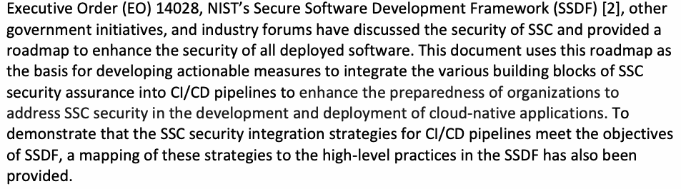
大統領令（EO）14028、NISTのセキュアソフトウェア開発フレームワーク（SSDF）[2]、その他の政府施策や業界フォーラムでは、SSCのセキュリティが議論され、デプロイされるすべてのソフトウェアの安全性を高めるためのロードマップが示されてきました。本書ではこのロードマップを基礎として、SSCセキュリティ保証の各構成要素をCI/CDパイプラインに統合する実行可能な対策を策定し、クラウドネイティブ・アプリケーションの開発およびデプロイにおいて、組織がSSCセキュリティに取り組む準備を強化します。CI/CDパイプライン向けのSSCセキュリティ統合戦略がSSDFの目的を満たすことを示すため、これらの戦略とSSDFのハイレベル実践との対応関係も示します。
Building a robust SSC security edifice requires various artifacts, such as a software bill of materials (SBOM) and frameworks for the attestation of software components. Since the specification of these artifacts, their mandatory constituents, and the requirements that processes using them must satisfy are continually evolving through projects in government organizations and various industry forums, they are beyond the scope of this document.
強固なSSCセキュリティ基盤の構築には、ソフトウェア部品表（SBOM）やソフトウェアコンポーネントを証明するためのフレームワークなど、さまざまなアーティファクトが必要となります。これらのアーティファクトの仕様、必須構成要素、およびそれを利用するプロセスが満たすべき要件は、政府組織や各種業界フォーラムのプロジェクトを通じて継続的に変化しているため、本書の対象範囲外です。
1. Introduction
1. はじめに
Cloud-native applications typically consist of multiple loosely coupled services or microservices and are sometimes accompanied by an integrated application service infrastructure, such as a service mesh. The applications are developed through an agile software development life cycle (SDLC) paradigm called DevSecOps, which uses flow processes called Continuous Integration/ Continuous Delivery (CI/CD) pipelines. The security of applications during runtime is ensured through various security measures, such as assigning unique service identities for microservices and subjects that invoke those services and policy enforcement through proxies. However, sophisticated attacks on software have been carried out through the stealthy introduction of attack vectors during various activities in the SDLC, which collectively constitute the software supply chain (SSC). Thus, in the context of cloud-native applications, SSC security assurance measures must be integrated into CI/CD pipelines.
クラウドネイティブ・アプリケーションは通常、疎結合の複数のサービスまたはマイクロサービスで構成され、サービスメッシュなどの統合アプリケーションサービス基盤を伴う場合もあります。これらのアプリケーションは、DevSecOpsと呼ばれるアジャイルなソフトウェア開発ライフサイクル（SDLC）パラダイムで開発されます。DevSecOpsは、継続的インテグレーション／継続的デリバリー（CI/CD）パイプラインと呼ばれるフロー型プロセスを利用します。実行時のアプリケーションのセキュリティは、マイクロサービスおよびそれらのサービスを呼び出す主体への一意なサービスIDの割り当てや、プロキシを介したポリシー適用など、さまざまなセキュリティ対策によって確保されます。しかし、SDLC内のさまざまな活動（これらが全体としてソフトウェアサプライチェーン（SSC）を構成する）の最中に攻撃ベクトルをひそかに導入することで、ソフトウェアに対する高度な攻撃が行われてきました。したがって、クラウドネイティブ・アプリケーションの文脈では、SSCセキュリティ保証対策をCI/CDパイプラインに統合しなければなりません。
1.1. Purpose
1.1. 目的
This document outlines strategies for integrating SSC security assurance measures into CI/CD pipelines to protect the integrity of the underlying activities. The overall goal is to ensure that the CI/CD pipeline activities that take source code through the build, test, package, and deployment stages are not compromised.
本書では、基礎となる活動の完全性を保護するため、SSCセキュリティ保証対策をCI/CDパイプラインに統合する戦略を概説します。全体的な目標は、ソースコードをビルド、テスト、パッケージ化、デプロイの各段階に進めるCI/CDパイプラインの活動が侵害されないようにすることです。
1.2. Scope
1.2. 適用範囲
SSC security assurance measures use various artifacts, such as a software bill of materials (SBOM) and frameworks for the attestation of software components. The specification of these artifacts, their mandatory constituents, and the requirements that processes using them must satisfy are continually evolving through projects in government organizations and various industry forums and are, therefore, beyond the scope of this document. Rather, this document focuses on actionable measures to integrate various building blocks for SSC security assurance into CI/CD pipelines to enhance the preparedness of organizations to address SSC security in the development and deployment of their cloud-native applications.
SSCセキュリティ保証対策では、ソフトウェア部品表（SBOM）やソフトウェアコンポーネントの証明フレームワークなど、さまざまなアーティファクトを用います。これらのアーティファクトの仕様、必須構成要素、およびそれらを利用するプロセスが満たすべき要件は、政府組織や各種業界フォーラムのプロジェクトを通じて継続的に変化しているため、本書の対象範囲外です。本書はむしろ、組織が自らのクラウドネイティブ・アプリケーションの開発およびデプロイにおいてSSCセキュリティに取り組む準備を強化できるよう、SSCセキュリティ保証のさまざまな構成要素をCI/CDパイプラインに統合する実行可能な対策に焦点を当てます。
1.3. Target Audience
1.3. 対象読者
This document is intended for a broad group of practitioners in the software industry, including site reliability engineers, software engineers, project and product managers, and security architects and engineers.
本書は、サイト信頼性エンジニア、ソフトウェアエンジニア、プロジェクトマネージャーおよびプロダクトマネージャー、セキュリティアーキテクトおよびエンジニアなど、ソフトウェア業界の幅広い実務者を対象とします。
1.4. Relationship to Other NIST Documents
1.4. 他のNIST文書との関係
This document is part of the NIST Special Publication (SP) 800-204 series of publications, which offer guidance on providing security assurance for cloud-native applications that are developed and deployed using the DevSecOps SDLC paradigm that uses CI/CD pipelines. SP 800-204C [1] discusses DevSecOps, which is an agile software development paradigm for cloud-native applications that focuses on the various types of code involved in microservices-based applications that are supported by a service mesh infrastructure. SP 800-218 [2] provides a comprehensive list of high-level practices and tasks for ensuring SSC security under the Secure Software Development Framework (SSDF) based on the directives in Executive Order (EO) 14028 [3]. Other documents in the SP 800-204 series outline the mechanisms for enforcing various types of access controls for inter-service calls in the microservices environment during runtime.
本書は、DevSecOps SDLCパラダイムを用いて開発・デプロイされるクラウドネイティブ・アプリケーションにセキュリティ保証を提供するための指針を示す、NIST特別刊行物（SP）800-204シリーズの一部です。このパラダイムではCI/CDパイプラインを利用します。SP 800-204C [1]は、サービスメッシュ基盤に支えられたマイクロサービス型アプリケーションで使用されるさまざまな種類のコードに焦点を当てる、クラウドネイティブ・アプリケーション向けのアジャイルなソフトウェア開発パラダイムであるDevSecOpsを論じています。SP 800-218 [2]は、大統領令（EO）14028 [3]の指示に基づくセキュアソフトウェア開発フレームワーク（SSDF）において、SSCセキュリティを確保するためのハイレベル実践とタスクを包括的に示します。SP 800-204シリーズの他の文書では、実行時のマイクロサービス環境でサービス間呼び出しにさまざまなアクセス制御を適用する仕組みを説明しています。
This document presents strategies for integrating SSC security into CI/CD pipelines through the identification of workflow tasks that can meet the goals of the various high-level practices outlined in the SSDF. Not all practices and tasks outlined in the SSDF may be applicable to the environment under discussion in this document – i.e., cloud-native applications developed using the DevSecOPs SDLC paradigm with CI/CD pipelines, representing a specific application architecture and SDLC, respectively. The SSDF is agnostic to both application architecture and the SDLC paradigm. However, to demonstrate that the SSC security integration strategies for CI/CD pipelines meet the objectives of SSDF, Appendix A provides a mapping of these strategies to the high-level practices in the SSDF. However, tasks relating to secure software design and the enterprise-level vulnerability management strategies are beyond the scope of this document and these are indicated in Appendix B.
本書では、SSDFに示されたさまざまなハイレベル実践の目標を満たすワークフロータスクを特定し、CI/CDパイプラインへのSSCセキュリティ統合戦略を提示します。SSDFに示されたすべての実践やタスクが、本書で扱う環境、すなわち特定のアプリケーションアーキテクチャとSDLCをそれぞれ表す、CI/CDパイプラインを用いてDevSecOps SDLCパラダイムで開発されるクラウドネイティブ・アプリケーションに適用できるとは限りません。SSDFは、アプリケーションアーキテクチャにもSDLCパラダイムにも依存しません。ただし、CI/CDパイプライン向けSSCセキュリティ統合戦略がSSDFの目的を満たすことを示すため、付録Aでこれらの戦略とSSDFのハイレベル実践との対応を示します。セキュアなソフトウェア設計や企業レベルの脆弱性管理戦略に関するタスクは本書の対象範囲外であり、付録Bに示します。
1.5. Document Structure
1.5. 文書の構成
This document is organized as follows:
本書の構成は次のとおりです。
•Section 2 presents a series of definitions for modelling and understanding software supply chains and their compromises.
•第2節では、ソフトウェアサプライチェーンとその侵害をモデル化し理解するための一連の定義を示します。
•Section 3 provides a broad understanding of common risk factors and potential mitigation measures with a particular focus on the software developer environment.
•第3節では、特にソフトウェア開発者の環境に焦点を当て、一般的なリスク要因と潜在的な緩和策について幅広く説明します。
•Section 4 provides the background for CI/CD pipelines, the broad security goals of the processes involved, and the entities that need to be trusted.
•第4節では、CI/CDパイプラインの背景、関係するプロセスの幅広いセキュリティ目標、および信頼する必要がある主体について説明します。
•Section 5 outlines strategies for integrating SSC security assurance measures into CI/CD pipelines.
•第5節では、SSCセキュリティ保証対策をCI/CDパイプラインに統合する戦略を概説します。
•Section 6 provides a summary and conclusions.
•第6節では、要約と結論を示します。
•Appendix A provides a mapping of the SSC security integration strategies for CI/CD pipelines to the SSDF’s high-level practices.
•付録Aでは、CI/CDパイプライン向けSSCセキュリティ統合戦略とSSDFのハイレベル実践との対応を示します。
•Appendix B provides a justification for the omission of certain measures related to SSDF practices in this document.
•付録Bでは、本書でSSDF実践に関連する一部の対策を省略した理由を説明します。
2. Software Supply Chain (SSC) — Definition and Model
2. ソフトウェアサプライチェーン（SSC）— 定義とモデル
2.1. Definition
2.1. 定義
Most activities in the SSC strongly affect the resulting software product. As such, the security of each individual activity is paramount for the security of the end result. This includes both the integrity of the activities themselves as well as the assurance that all activities were carried out and — conversely — that no unauthorized activities were injected into the chain.
SSCの活動の大半は、最終的なソフトウェア製品に強く影響します。そのため、最終成果物のセキュリティを確保するうえで、個々の活動の安全性が極めて重要となります。これには、活動そのものの完全性だけでなく、すべての活動が実施されたことの保証と、逆に、許可されていない活動がサプライチェーンに挿入されていないことの保証も含まれます。
While software composition (e.g., dependency management) is under the purview of software supply chain activities, other often overlooked activities are central to the software supply chain. This includes writing source code; building, packaging, and delivering an application; and repackaging and containerization.
ソフトウェアの構成（例：依存関係管理）はソフトウェアサプライチェーン活動の範囲内ですが、見落とされがちな他の活動もサプライチェーンの中核をなします。これには、ソースコードの作成、アプリケーションのビルド、パッケージ化、配信、および再パッケージ化やコンテナ化が含まれます。
An SSC attack can take on several forms, such as:
SSC攻撃には、次のようないくつかの形態があります。
•Subverting, removing, or introducing a step within the SSC to maliciously modify or sabotage the resulting software product
•SSC内の工程を不正に操作する、削除する、または新たに挿入することにより、最終的なソフトウェア製品を悪意を持って改変または妨害します。
•Stealing credentials from the build system to mint and sign unauthorized malicious software
•ビルドシステムから認証情報を盗み、許可されていない悪意あるソフトウェアを生成して署名します。
•Causing naming collisions
•名前の衝突を引き起こします。
SSC attacks can have a wide range of consequences that affect the correctness, integrity, or availability of a software product (e.g., making upstream dependencies unavailable). In practice, attackers often target the activities mentioned above to implant backdoors and subsequently compromise a target (i.e., end product) or exfiltrate sensitive information once the application is delivered.
SSC攻撃は、ソフトウェア製品の正確性、完全性、可用性に影響する幅広い結果をもたらしうます（例：上流の依存関係を利用不能にします）。実際には、攻撃者は前述の活動を標的としてバックドアを埋め込み、その後、標的（すなわち最終製品）を侵害したり、アプリケーション配信後に機密情報を持ち出したりすることが多くあります。
SSC security should also account for discovering and tracking software security defects rather than simply mitigating attacks. To facilitate this, the software bill of materials (SBOM) must be shared with end users so that they can build inventories of software components. However, while SBOMs enable the identification of components and provenance, they do not provide enough information to address vulnerabilities nor content to address software defects. Hence, SBOMs alone cannot be used for vulnerability management. They simply provide the list of components to focus on when addressing vulnerabilities or defects in software.
SSCセキュリティでは、単に攻撃を緩和するだけでなく、ソフトウェアのセキュリティ上の欠陥を発見し追跡することも考慮すべきです。これを促進するため、ソフトウェア部品表（SBOM）をエンドユーザーと共有し、エンドユーザーがソフトウェアコンポーネントのインベントリを構築できるようにしなければなりません。ただし、SBOMはコンポーネントと来歴の特定を可能にするものの、脆弱性に対処するのに十分な情報も、ソフトウェアの欠陥に対処するための内容も提供しません。したがって、SBOMだけを脆弱性管理に使うことはできません。SBOMは、ソフトウェアの脆弱性や欠陥に対処する際に注目すべきコンポーネントの一覧を提供するにすぎません。
2.2. Economics of Security
2.2. セキュリティの経済性
SSC attacks have two fundamental properties that make them appealing to attackers. First, they allow attackers to infiltrate highly-regulated environments through less secure but legitimate channels. Second, due to the highly-interconnected nature of supply chains, they allow for widespread damage in a short period of time.
SSC攻撃には、攻撃者にとって魅力的な2つの基本的特性があります。第一に、より安全性の低い正規の経路を通じて、厳格に規制された環境へ侵入できます。第二に、サプライチェーンは相互接続性が非常に高いため、短時間で広範囲に被害を及ぼすことができます。
Insufficient care in operating highly regulated environments throughout the SDLC often allows motivated attackers to identify weak spots in the chain. In the case of SOLORIGATE [4], for example, attackers identified a single point of compromise that delivered software to multiple government agencies. Such attacks are also stealthy because they typically propagate through legitimate channels, such as software updates, which allows for widespread damage to users of the target software. These attacks are successful because of the significant amount of implicit trust present in these legitimate channels, and a first defensive measure calls for the removal of this implicit trust. Since attackers typically seek this avenue to obtain short-term benefits, widespread attacks of this nature often rely on the use of private crypto miners and cryptojackers. This is evidenced in the prevalence of these vectors existing in breadth-first approaches, such as typo and combosquatting attacks. Regardless of the motivations of the attackers, both vectors highlight the possibility of devastating impacts when attacks are successful.
SDLCを通じて厳格に規制された環境の運用に十分な注意が払われないと、意欲的な攻撃者がサプライチェーンの弱点を特定できてしまうことが多くあります。たとえばSOLORIGATE [4]の場合、攻撃者は複数の政府機関にソフトウェアを配信していた単一の侵害ポイントを特定しました。このような攻撃は、通常、ソフトウェア更新などの正規の経路を通じて伝播するため隠密性も高く、これにより標的ソフトウェアの利用者に広範な被害が及びうます。こうした攻撃が成功するのは、これらの正規の経路に大きな暗黙の信頼が存在するためであり、最初の防御策として、この暗黙の信頼を取り除くことが求められます。攻撃者は通常、短期的な利益を得るためにこの経路を狙うため、この種の広範な攻撃は、私的な暗号資産マイナーやクリプトジャッカーの利用に依存することが多くあります。このことは、タイポスクワッティング攻撃やコンボスクワッティング攻撃などの幅優先型のアプローチにこれらの攻撃ベクトルが広く見られることからも裏付けられます。攻撃者の動機にかかわらず、いずれの攻撃ベクトルも、攻撃が成功した場合に壊滅的な影響が生じうることを示しています。
2.3. Governance Model
2.3. ガバナンスモデル
Due to the distributed nature of an SSC, multiple practices, developer cultures, security and quality expectations, and legislative frameworks exist. As a consequence, there is no unified governance model, and these distinct models often overlap.
SSCは分散しているため、複数の慣行、開発者文化、セキュリティおよび品質への期待、法制度が存在します。その結果、統一されたガバナンスモデルはなく、個々のモデルが互いに重複することも多くあります。
2.4. SSC Model
2.4. SSCモデル
At a high level, an SSC is a collection of steps that create, transform, and assess the quality and policy conformance of software artifacts. These steps are often carried out by different actors who use and consume artifacts to produce new artifacts. For example, a build step uses a series of artifacts as tools (e.g., a compiler and a linker) and consumes artifacts (i.e., source code) to produce a new artifact (i.e., the compiled binary).
大まかに言えば、SSCはソフトウェアアーティファクトを作成・変換し、その品質と方針への適合性を評価する一連の工程です。これらの工程は、アーティファクトを使い、消費して新たなアーティファクトを作るさまざまな主体が実行することが多くあります。たとえば、ビルド工程では、一連のアーティファクトをツール（例：コンパイラー、リンカー）として使い、アーティファクト（すなわちソースコード）を入力として消費し、新しいアーティファクト（すなわちコンパイル済みバイナリ）を生成します。
Without a loss of generality, this same definition can be applied to other actions, such as writing code, packaging an application inside of a container, and performing quality assurance. This definition also encompasses more activities than are colloquially considered. That is, it includes elements of secure software development, secure build systems, and dependency management. These elements collectively define the SSC model.
一般性を損なうことなく、この定義はコードの記述、アプリケーションのコンテナ内へのパッケージ化、品質保証の実施など、他の作業にも適用できます。また、この定義は一般に想定されるより多くの活動を含み、安全なソフトウェア開発、安全なビルドシステム、依存関係管理の要素も対象とします。これらの要素がSSCモデルを構成します。
While this simplified model can accommodate multiple activities, mitigations and attacks may surface in different, nuanced ways for each activity.
この単純化されたモデルは複数の活動を扱えますが、活動ごとに緩和策や攻撃の現れ方は異なり、微妙な差が生じる場合があります。
![Fig. 1. Interaction between the different elements of a software supply chain (SSC) step. A trapezoid labeled “Step” is in the center. A box “Artifacts” at the upper left connects to the Step by an arrow labeled “Uses”. From the Step, a line labeled “Produces” leads to an arrow pointing up into a second box “Artifacts” at the upper right. A person icon labeled “Actor” at the lower left connects to the Step by an arrow labeled “carries out”. A dashed box “Resources” at the lower right connects to the Step by an arrow labeled “Used for”.](assets/204d/p0015-figure-01.png)
図1. ソフトウェアサプライチェーン（SSC）の工程を構成する各要素の間の相互作用。中央に「Step」（工程）と書かれた台形がある。左上の「Artifacts」（アーティファクト）の箱から「Uses」（使用する）と書かれた矢印が工程へ向かう。工程からは「Produces」（生成する）と書かれた線が出て、右上のもう1つの「Artifacts」の箱へ上向きの矢印で入る。左下の人物アイコン「Actor」（主体）から「carries out」（実行する）と書かれた矢印が工程へ向かう。右下の破線の箱「Resources」（資源）から「Used for」（〜に使われる）と書かれた矢印が工程へ向かう。
Fig. 1. Interaction between the different elements1 of a software supply chain (SSC) step2
図1. ソフトウェアサプライチェーン（SSC）の工程2を構成する各要素1の間の相互作用
2.4.1. Software Supply Chain Defects
2.4.1. ソフトウェアサプライチェーンの欠陥
Much like software defects (i.e., bugs), defective artifacts can propagate throughout an SSC and affect its security posture. A noteworthy example of such a defect is Log4Shell [5], where a vulnerability in a highly-used software artifact allowed attackers to compromise a large number of targets with very little effort.
ソフトウェアの欠陥（バグ）と同様に、欠陥のあるアーティファクトはSSC全体に伝播し、そのセキュリティ態勢に影響します。顕著な例がLog4Shell [5]であり、広く使われていたソフトウェアアーティファクトの脆弱性により、攻撃者はごく少ない労力で多数の標的を侵害できました。
If software is used in a manner that it was not originally intended or configured for, it may result in an insecure state. However, while the line between a defect and an attack is often blurred in the context of SSC, the guiding principle is that of intent — that is, whether or not the upstream actor intended to exploit that defect. In the context of software engineering, not all defects are vulnerabilities, regardless of intent. Vulnerabilities may be present for other reasons, and that presence does not guarantee exploitation, which is what defines an attack. Malicious actors complete the defect-attack chain by intentionally introducing weaknesses that they can later exploit.
ソフトウェアが本来の意図または設定とは異なる方法で使われると、安全でない状態を招くことがあります。SSCの文脈では欠陥と攻撃の境界が曖昧になりやすいが、判断の基本は意図、すなわち上流の主体がその欠陥を悪用する意図を持っていたかどうかです。ソフトウェアエンジニアリングでは、意図の有無にかかわらず、すべての欠陥が脆弱性になるわけではありません。脆弱性は他の理由でも存在しうるが、脆弱性があるだけで悪用が保証されるわけではなく、悪用されて初めて攻撃となります。悪意ある主体は、後で自らが悪用できる弱点を意図的に持ち込むことで、欠陥から攻撃へ至る連鎖を完成させます。
2.4.2. Software Supply Chain Attacks
2.4.2. ソフトウェアサプライチェーン攻撃
In contrast to defects, an SSC attack is when a malicious party tampers with the steps, artifacts, or actors within the chain to compromise the consumers of a software artifact down the line.
欠陥とは異なり、SSC攻撃とは、悪意ある主体がサプライチェーン内の工程、アーティファクト、または主体を改ざんし、その後工程でソフトウェアアーティファクトを利用する者を侵害することです。
Explicitly, an SSC attack is a three-stage process:
具体的には、SSC攻撃は次の3段階で構成されます。
1.Artifact, step, or actor compromise: An attacker compromises an element of the SSC (see Fig. 1) to modify an artifact or the information of such.
1.アーティファクト、工程、または主体の侵害：攻撃者がSSCの構成要素（図1参照）を侵害し、アーティファクトまたはその情報を改変します。
2.Propagation: The attack propagates throughout the chain.
2.伝播：攻撃がサプライチェーン全体に広がります。
3.Exploitation: The attacker exploits the target to achieve their goals (e.g., exfiltration of data, cryptojacking).
3.悪用：攻撃者が標的を悪用し、自らの目的（例：データの持ち出し、クリプトジャッキング）を達成します。
3. SSC Security — Risk Factors and Mitigation Measures
3. SSCセキュリティ — リスク要因と緩和策
This section considers the various risk factors that are applicable to the SDLC environment and the mitigation measures that can counter those risks.
本節では、SDLC環境に関係するさまざまなリスク要因と、それらに対処する緩和策を検討します。
3.1. Risk Factors, Targets, and Types of Exploits in an SSC
3.1. SSCにおけるリスク要因、標的、エクスプロイトの種類
The risk factors in an SSC typically include:
SSCのリスク要因には、通常、次のものが含まれます。
•Vulnerabilities in the developer environment
•開発者環境の脆弱性
•Threat actors
•脅威アクター
•Attack vectors
•攻撃ベクトル
•Attack targets (i.e., assets)
•攻撃対象（すなわち資産）
•Types of exploits
•エクスプロイトの種類
3.1.1. Developer Environment
3.1.1. 開発者環境
Developer workstations and their environments present a fundamental risk to the security of an SSC and should not be trusted as part of the build process since they are at risk of compromise. Mature SDLC processes accept code and assets into their software configuration management (SCM) mainline and versions branches only after code reviews and scanners are in place.
開発者のワークステーションとその環境は、SSCのセキュリティに対する根本的なリスクとなります。侵害されるおそれがあるため、ビルドプロセスの一部として信頼すべきではありません。成熟したSDLCプロセスでは、コードレビューとスキャナーを導入した後に限り、コードと資産をソフトウェア構成管理（SCM）のメインラインおよびバージョンブランチに受け入れます。
3.1.2. Threat Actors
3.1.2. 脅威アクター
Threat actors are generally:
脅威アクターには、一般に次のものがあります。
•External attackers who seek privileged access to an SSC
•SSCへの特権アクセスを狙う外部攻撃者
•Disgruntled employees or contractors who perpetuate insider threats
•内部脅威を引き起こす不満を持つ従業員または請負業者
External attackers may include foreign adversaries, criminal organizations, and cyber-activists who target an SSC for various reasons, such as espionage or sabotage. Internal attackers pose a significant risk, as they may have insider access to sensitive information — often using legitimate access rights — that allow them to launch attacks or steal confidential information. Additionally, both categories of threat actors may use a variety of techniques to compromise the SDLC environment and steal or manipulate software, such as phishing, malware, social engineering, and physical access. Therefore, companies should be aware of these risks and take appropriate measures (see Sec. 3.2) to secure their SSC.
外部攻撃者には、スパイ活動や妨害工作などのさまざまな理由でSSCを標的とする外国の敵対者、犯罪組織、サイバー活動家が含まれうます。内部攻撃者は重大なリスクとなります。機密情報への内部者としてのアクセスを持つ場合があり、多くの場合は正当なアクセス権を用いて、攻撃を仕掛けたり機密情報を盗み出したりできるためです。また、どちらの種類の脅威アクターも、フィッシング、マルウェア、ソーシャルエンジニアリング、物理的アクセスなど、さまざまな手法を用いてSDLC環境を侵害し、ソフトウェアを盗んだり改ざんしたりする可能性があります。したがって企業は、こうしたリスクを認識し、SSCを保護するための適切な対策（第3.2節参照）を講じるべきです。
Non-malicious threat actors may also impact the security of supply chains, such as a software engineer who inadequately manages secrets through a lack of tooling or purposeful subterfuge for ease of use. Organizations should be aware of these situations and take suitable measures to avoid such practices.
悪意のない脅威アクターもサプライチェーンのセキュリティに影響を及ぼしうます。たとえば、ツールの不足のため、または使いやすさを優先した意図的なごまかしによって、シークレットを不適切に管理するソフトウェアエンジニアがこれに当たります。組織はこのような状況を認識し、そうした慣行を避けるための適切な対策を講じるべきです。
3.1.3. Attack Vectors
3.1.3. 攻撃ベクトル
Attack vectors in an SSC include:
SSCの攻撃ベクトルには、次のものが含まれます。
•Malware
•マルウェア
•Code reuse or the ingest of libraries and dependencies
•コードの再利用、またはライブラリや依存関係の取り込み
•Social engineering
•ソーシャルエンジニアリング
•Network-based attacks
•ネットワークベースの攻撃
•Physical attacks
•物理的攻撃
Attack vectors can originate from various sources, including malware attacks on developer workstations, social engineering attacks on developers, network-based attacks on the development environment, and physical attacks on the hardware or networks used by developers. These different attack vectors require distinct countermeasures, including endpoint protection software, network security controls, access control policies, and physical security measures. Companies should identify potential risks and vulnerabilities, assess their security posture, and implement appropriate defensive measures to mitigate threats to their SDLC environment.
攻撃ベクトルは、開発者のワークステーションに対するマルウェア攻撃、開発者に対するソーシャルエンジニアリング攻撃、開発環境に対するネットワークベースの攻撃、開発者が使うハードウェアまたはネットワークへの物理的攻撃など、さまざまな発生源から生じうます。これらの攻撃ベクトルには、エンドポイント保護ソフトウェア、ネットワークセキュリティ管理策、アクセス制御方針、物理セキュリティ対策など、それぞれ異なる対抗策が必要となります。企業は潜在的なリスクと脆弱性を特定し、セキュリティ態勢を評価し、SDLC環境への脅威を緩和する適切な防御策を実施すべきです。
In the case of ingested code, it is essential to verify the provenance information of the component being used to ensure that it is what it says it is and is coming from an expected source. Mitigations for this involve caching or curating packages and components for preferred use.
取り込んだコードについては、使用するコンポーネントの来歴情報を検証し、それが表示どおりのものであり、想定した提供元から来ていることを確認することが不可欠です。この緩和策としては、優先的に使用するパッケージやコンポーネントをキャッシュする、または選別して管理する方法があります。
3.1.4. Attack Targets (Assets)
3.1.4. 攻撃対象（資産）
The assets targeted under an SSC may include:
SSCで標的となる資産には、次のものが含まれうます。
•Source code
•ソースコード
•Credentials
•認証情報
•Sensitive data
•機密データ
•Internal operations
•内部運用
•Build systems
•ビルドシステム
A software developer’s workstation typically contains various assets, including source code, credentials, and access to sensitive information, such as personally identifiable information (PII), protected health information (PHI), intellectual property (IP), cryptographic materials (e.g., software artifact signing keys), and proprietary information. Companies should identify critical assets and implement controls to protect them from unauthorized access, such as access controls, multi-factor authentication, encryption of data at rest and in transit, and data loss prevention (DLP) measures.
ソフトウェア開発者のワークステーションには通常、ソースコード、認証情報、および個人識別情報（PII）、保護対象保健情報（PHI）、知的財産（IP）、暗号資材（例：ソフトウェアアーティファクトの署名鍵）、専有情報などの機密情報へのアクセスを含む、さまざまな資産が存在します。企業は重要資産を特定し、アクセス制御、多要素認証、保存中および転送中のデータの暗号化、データ損失防止（DLP）対策など、それらを不正アクセスから保護する管理策を実施すべきです。
3.1.5. Types of Exploits
3.1.5. エクスプロイトの種類
Exploits in the context of attack vectors and targeted assets in an SSC typically include:
SSCの攻撃ベクトルと標的資産に関連するエクスプロイトには、通常、次のものが含まれます。
•Injection of vulnerable or malicious dependencies into an SSC
•脆弱または悪意ある依存関係をSSCに挿入します。
•Stolen credentials that grant access to other systems
•他のシステムへのアクセスを許す認証情報を盗みます。
•Injection of malicious or vulnerable code into repositories
•悪意あるコードまたは脆弱なコードをリポジトリに挿入します。
•Stealing secrets by submitting merge requests
•マージリクエストを送信してシークレットを盗みます。
Threat actors may seek to compromise various components of the SDLC process, including source code, testing environments, development tools, and build pipelines. They may introduce vulnerabilities, malware, or stolen credentials to gain access to other systems or compromise sensitive data. Such threats can result in financial losses, reputational damage, physical damage and legal consequences.
脅威アクターは、ソースコード、テスト環境、開発ツール、ビルドパイプラインなど、SDLCプロセスのさまざまな構成要素を侵害しようとすることがあります。他のシステムへのアクセスや機密データの侵害を目的に、脆弱性、マルウェア、盗み出した認証情報を持ち込む場合もあります。こうした脅威は、金銭的損失、評判の毀損、物理的損害、法的責任につながりうます。
To inject malicious code into repositories, attackers may perform an operation called “forking,” which allows the attacker to copy some repository and freely make modifications outside of the original project. The attacker then initiates a pull request to merge the forked project with the original project. If the project maintainer accepts the request without properly and adequately reviewing the changes and determining them to be suitable, they will merge them into the original project, thus introducing malicious code into the repository.
リポジトリに悪意あるコードを挿入するため、攻撃者は「フォーク」と呼ばれる操作を行う場合があります。これは、攻撃者が何らかのリポジトリを複製し、元のプロジェクトの外で自由に変更を加えられるようにする操作です。攻撃者はその後、フォークしたプロジェクトを元のプロジェクトにマージするプルリクエストを開始します。プロジェクト保守者が、変更を適切かつ十分にレビューして妥当であると判断することなくリクエストを承認すると、保守者はその変更を元のプロジェクトにマージすることになり、リポジトリに悪意あるコードが持ち込まれます。
When open-source code is used, an artifact or package is often pulled from a repository based on the reputation of the developer or the repository. However, there is no guarantee that pulled code is the same software that the developer authored and checked into their source- code repository. The following actions could have potentially occurred, resulting in a lack of assurance or an inability to trust the code:
原本PDFの抜粋画像
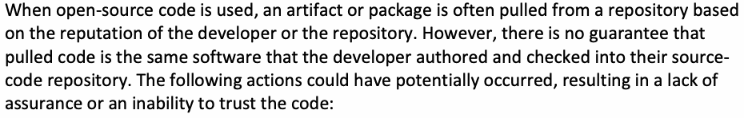
オープンソースコードを使う場合、開発者またはリポジトリの評判に基づいて、リポジトリからアーティファクトやパッケージを取得することが多くあります。しかし、取得したコードが、開発者自身が作成してソースコードリポジトリに登録したソフトウェアと同一である保証はありません。次の事象が起きている可能性があり、その場合、コードの信頼性を保証できない、またはコードを信頼できません。
•The source code could have been modified.
•ソースコードが改変されている可能性があります。
•Vulnerabilities could have been introduced due to an insecure build system.
•安全でないビルドシステムにより、脆弱性が持ち込まれている可能性があります。
•Checks, such as scanning and various types of tests (e.g., static, dynamic, or interactive), may have been bypassed in the CI/CD process.
原本PDFの抜粋画像
•CI/CDプロセスで、スキャンや各種テスト（例：静的、動的、対話型）などのチェックが回避されている可能性があります。
•The repository owner may have improperly configured the repository, allowing malicious actors to submit pull requests with the intention of stealing secrets configured within a CI/CD pipeline.
•リポジトリ所有者がリポジトリを不適切に設定しており、悪意ある主体が、CI/CDパイプライン内に設定されたシークレットを盗む目的でプルリクエストを送信できるようになっている可能性があります。
3.2. Mitigation Measures
3.2. 緩和策
A secure SDLC environment can reduce the likelihood of security incidents and ensure the confidentiality, integrity, and availability of software assets and systems. It is crucial to assess security risks and implement appropriate defensive measures to protect software supply chains against compromise.
安全なSDLC環境は、セキュリティインシデントの可能性を下げ、ソフトウェア資産およびシステムの機密性、完全性、可用性を確保します。ソフトウェアサプライチェーンを侵害から守るには、セキュリティリスクを評価し、適切な防御策を実施することが重要です。
The following generic mitigation measures are applicable to the entire SDLC but are particularly relevant to an SSC:
次に示す一般的な緩和策はSDLC全体に適用でき、特にSSCに関係します。
•Patch management
•パッチ管理
•Dependency management
•依存関係管理
•Authentication and authorization
•認証および認可
•Malware protection
•マルウェア対策
•Secure SDLC
•セキュアなSDLC
•Data protection
•データ保護
•Physical security
•物理セキュリティ
•Audit and monitoring
•監査および監視
•Adherence to applicable security standards (e.g., regulatory requirements)
•適用されるセキュリティ標準（例：規制要件）の遵守
Organizations can implement various controls to mitigate risks to their SDLC environment, including regular patch management, robust authentication, granular authorization, malware protection, secure SDLC practices, data protection measures, physical security controls, and auditing and monitoring tools. They should regularly assess their security posture, identify potential weaknesses and vulnerabilities, and implement appropriate defensive measures to address them. Organizational network policies that account for and actively block maliciously known content-serving domains can reduce the use of software from non-curated or undesired locations. Another integral part of SSC security involves capturing the dependencies (e.g., package name, version) of the artifacts in a central repository. Organizations should also ensure that their SDLC environment remains compliant with various security and other relevant standards, such as the Open Worldwide Application Security Project (OWASP) Top Ten, SP 800-53, Health Insurance Portability and Accountability Act (HIPAA), and Payment Card Industry Data Security Standard (PCI DSS).
組織は、定期的なパッチ管理、強固な認証、きめ細かな認可、マルウェア対策、セキュアなSDLC慣行、データ保護対策、物理セキュリティ管理策、監査・監視ツールなど、SDLC環境に対するリスクを緩和するさまざまな管理策を実装できます。組織は、セキュリティ態勢を定期的に評価し、潜在的な弱点や脆弱性を特定し、それらに対処するための適切な防御策を実施すべきです。悪意あるコンテンツを配信することが判明しているドメインを考慮し、積極的に遮断する組織のネットワーク方針により、選別されていない場所や望ましくない場所からのソフトウェアの利用を減らせます。SSCセキュリティのもう一つの不可欠な要素は、アーティファクトの依存関係（例：パッケージ名、バージョン）を中央リポジトリに記録することです。また、組織は、SDLC環境が、Open Worldwide Application Security Project（OWASP）Top Ten、SP 800-53、医療保険の携行性と責任に関する法律（HIPAA）、Payment Card Industry Data Security Standard（PCI DSS）など、さまざまなセキュリティ標準やその他の関連標準に準拠し続けるようにすべきです。
The choice of a mitigation approach will depend on the organization’s customized threat model. However, all developer systems should meet a predefined minimum baseline for security to ensure that the operating system and applications are kept up to date with the latest security patches, individual and unshared user accounts are adequately protected, and proper access controls are enforced when interacting with SCM.
緩和アプローチの選択は、組織がカスタマイズした脅威モデルに依存します。ただし、すべての開発者システムは、事前に定めた最低限のセキュリティベースラインを満たすべきです。これは、OSとアプリケーションが最新のセキュリティパッチで最新の状態に保たれ、個人ごとの共有されていないユーザーアカウントが適切に保護され、SCMとやり取りする際に適正なアクセス制御が実施されることを確実にするためです。
3.2.1. Baseline Security
3.2.1. ベースラインセキュリティ
Independent and open-source developers will need to follow best practices to protect their own systems. Government and enterprise environments should establish and adhere to a well-defined security policy that meets regulatory requirements and industry best practices. Since the development of such a policy is out of scope for this document, readers should refer to SP 800-53r5 (Revision 5) [6] for a more complete treatment of this topic.
独立系およびオープンソースの開発者は、自らのシステムを保護するためにベストプラクティスに従う必要があります。政府および企業の環境では、規制要件と業界のベストプラクティスを満たす、明確に定義されたセキュリティ方針を策定し、それを遵守すべきです。このような方針の策定は本書の対象範囲外であるため、この主題のより完全な扱いについては、読者はSP 800-53r5（第5版）[6]を参照すべきです。
The following are some baseline security measures that should be adopted when integrating open-source software (OSS) components into any enterprise project:
オープンソースソフトウェア（OSS）コンポーネントを企業プロジェクトに統合する際に採用すべき、ベースラインのセキュリティ対策を以下に示します。
•The security team should establish a policy for trusted sources of OSS (e.g., allow lists) that includes reviewing minimum coding requirements, reputational standards, and distributing source code in a digitally signed package.
•セキュリティチームは、信頼するOSS提供元に関する方針（例：許可リスト）を定めるべきです。その方針には、最低限のコーディング要件や評判基準のレビュー、およびソースコードをデジタル署名付きパッケージで配布することを含めます。
•The security team should approve the merging of unverified sources of OSS.
•セキュリティチームは、未検証のOSSソースのマージを承認すべきです。
•Developers should download OSS as source code rather than pre-compiled libraries or binaries, when available.
•開発者は、入手可能な場合、プリコンパイル済みライブラリやバイナリではなく、ソースコードとしてOSSをダウンロードすべきです。
•Developers should verify digital signatures, run vulnerability scans, check for recent updates on newly downloaded OSS’s source-code packages, and generate an SBOM with dependency scanning on the first commit in order to identify the risks of any upstream or downstream dependencies within the OSS.
•開発者は、新たにダウンロードしたOSSのソースコードパッケージについて、デジタル署名を検証し、脆弱性スキャンを実行し、直近の更新を確認すべきです。また、OSS内のあらゆる上流または下流の依存関係のリスクを特定するため、最初のコミット時に依存関係スキャンを伴うSBOMを生成すべきです。
•Artifacts should be scanned in internal repositories for newly discovered or identified defects and the ability to stop their use in builds based on criticality.
•内部リポジトリ内のアーティファクトは、新たに発見または特定された欠陥についてスキャンすべきであり、重大度に基づいてビルドでのその使用を停止できる能力を備えるべきです。
•CI/CD processes should be audited regularly, and automation should be introduced wherever possible to improve the performance of activities and operations.
•CI/CDプロセスは定期的に監査すべきであり、活動や運用のパフォーマンスを向上させるため、可能な限り自動化を導入すべきです。
•There should be isolated CI/CD environment and elevated administrator credentials for the deployment of applications in clouds.
•クラウドへのアプリケーションのデプロイのために、分離されたCI/CD環境と、昇格された管理者認証情報を用意すべきです。
•There should be enhanced real-time monitoring and alerting mechanisms to detect suspicious activities in CI/CD servers, especially activities that might indicate the exfiltration of sensitive data or the tampering of builds.
•CI/CDサーバーにおける疑わしい活動、特に機密データの持ち出しやビルドの改ざんを示す可能性がある活動を検知するため、強化されたリアルタイムの監視およびアラートの仕組みを用意すべきです。
3.2.2. Controls for Interacting With SCM Systems
3.2.2. SCMシステムとのやり取りに関する管理策
Developers use their workstations to create, edit, and test source code. This process requires developers to pull source code from the SCM, modify the source code, and submit changes (i.e., patches) back to the SCM. The proposed changes should adhere to the SDLC processes defined by the organization. Pull access to the software depends on the policies of the software project in question (e.g., open-source projects typically allow anyone to pull, replicate, modify, and share the source code with minimal or copyleft restrictions). Proprietary software vendors often enforce strict rules that describe who is allowed to access the source code and under what conditions. In all cases, write access to the SCM should be considered a high risk and tightly controlled. A mature SDLC process allows developers to propose patches to the SCM, but another developer should perform a code review before the patch is merged. Code analysis tools should be implemented to catch common mistakes, but care should be taken to not inundate the developers with too many false positives to prevent alert fatigue.
開発者はワークステーションを使ってソースコードを作成、編集、テストします。このプロセスでは、開発者がSCMからソースコードを取得し、ソースコードを変更し、変更（すなわちパッチ）をSCMに提出して戻す必要があります。提案する変更は、組織が定めたSDLCプロセスに従うべきです。ソフトウェアへの取得アクセスは、当該ソフトウェアプロジェクトの方針に依存します（例：オープンソースプロジェクトでは、通常、最小限の制限またはコピーレフトの制限の下で、誰もがソースコードを取得、複製、変更、共有できます）。プロプライエタリソフトウェアのベンダーは、誰がどのような条件でソースコードにアクセスできるかを定めた厳格な規則を適用することが多くあります。いずれの場合も、SCMへの書き込みアクセスは高リスクとみなし、厳格に管理すべきです。成熟したSDLCプロセスでは、開発者がSCMへのパッチを提案できますが、パッチがマージされる前に別の開発者がコードレビューを行うべきです。一般的な誤りを検出するためにコード分析ツールを導入すべきですが、アラート疲れを防ぐため、過度に多くの誤検知を開発者に浴びせないよう注意すべきです。
4. CI/CD Pipelines — Background, Security Goals, and Entities to be Trusted
4. CI/CDパイプライン — 背景、セキュリティ目標、信頼すべき主体
DevSecOps is an agile paradigm used for the development and deployment of cloud-native applications. This paradigm consists of a series of stages that takes code from variously sourced repositories (e.g., first-party or in-house, third parties or open-source/commercial) to perform tasks or activities, such as building, packaging, testing, and deploying.
DevSecOpsは、クラウドネイティブ・アプリケーションの開発とデプロイに用いられるアジャイルなパラダイムです。このパラダイムは、さまざまな提供元のリポジトリ（例：自社内、第三者、オープンソースまたは商用）からコードを取り込み、ビルド、パッケージ化、テスト、デプロイなどを行う一連の段階で構成されます。
In this document, the term “artifacts” denotes source code as well as the things generated from it, such as builds and packages. Each of the artifacts is associated with an owner. The logical containers that hold these artifacts are called repositories. The build process is based on application logic-driven dependencies and generates builds using many individual source-code artifacts that are stored in build repositories. The build artifacts are tested and used to generate packages whose artifacts are then stored in designated repositories and scanned before being deployed in testing or production environments. These stages and the various tasks performed at each stage are collectively called CI/CD pipelines. In other words, CI/CD pipelines use processes called workflows to transform source artifacts to deployable packages in production environments.
本書でいう「アーティファクト」とは、ソースコードと、そこから生成されるビルドやパッケージなどを指します。各アーティファクトには所有者が関連付けられています。これらのアーティファクトを格納する論理的な入れ物をリポジトリと呼びます。ビルドプロセスはアプリケーションロジックに由来する依存関係に基づき、ビルドリポジトリに保存された多数の個別ソースコードアーティファクトを用いてビルドを生成します。ビルドアーティファクトはテストされ、パッケージの生成に用いられます。パッケージのアーティファクトは指定のリポジトリに保存され、テスト環境または本番環境にデプロイされる前にスキャンされます。これらの段階と、各段階で実行されるさまざまなタスクを総称してCI/CDパイプラインと呼びます。言い換えれば、CI/CDパイプラインは、ワークフローと呼ばれるプロセスを用いて、ソースアーティファクトを本番環境にデプロイ可能なパッケージへ変換します。
A common approach to SSC security in all of these workflows is to generate as much provenance data as possible. Provenance data are associated with the chronology of the origin, development, ownership, location, and changes to a system or system component, including the personnel and processes that enabled those changes or modifications. The generation of these data should be accompanied by corresponding mechanisms to validate, authenticate, and leverage them in policy decisions.
原本PDFの抜粋画像
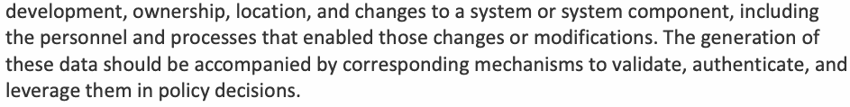
これらすべてのワークフローにおけるSSCセキュリティの一般的な手法は、来歴データを可能な限り多く生成することです。来歴データは、システムまたはシステムコンポーネントの起源、開発、所有権、所在、変更の経緯に関連するものであり、それらの変更や修正を可能にした担当者とプロセスも含みます。こうしたデータの生成には、データを検証・認証し、ポリシー上の判断に活用するための対応する仕組みを伴わせるべきです。
From the above description of CI/CD pipelines and associated activities, one can identify the set of security assurance measures that need to be added:
前述のCI/CDパイプラインと関連活動の説明から、追加すべきセキュリティ保証対策を特定できます。
•Internal SSC security practices that are applied during the development and deployment of first-party software
•自社ソフトウェアの開発およびデプロイ時に適用する、社内SSCセキュリティ慣行
•Security practices that are applied with respect to the procurement, integration, and deployment of third-party software (i.e., open-source and commercial software modules)
•第三者ソフトウェア（すなわちオープンソースおよび商用ソフトウェアモジュール）の調達、統合、デプロイに適用するセキュリティ慣行
4.1. Broad Security Goals for CI/CD Pipelines
4.1. CI/CDパイプラインの広範なセキュリティ目標
There are two security goals in the application of SSC security measures or practices in CI/CD pipelines:
CI/CDパイプラインにSSCセキュリティ対策または慣行を適用する際のセキュリティ目標は2つあります。
1.Actively defend the CI/CD pipeline and build processes.
1.CI/CDパイプラインとビルドプロセスを積極的に防御します。
2.Ensure the integrity of upstream sources and artifacts (e.g., repositories).
2.上流のソースとアーティファクト（例：リポジトリ）の完全性を確保します。
The most common approach is to introduce security measures into the CI/CD platform, which allows developers to automate their build, test, and deployment pipelines. There are many open-source and commercial CI/CD platforms available on the market.
原本PDFの抜粋画像
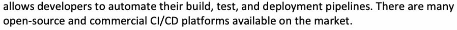
最も一般的な方法は、開発者がビルド、テスト、デプロイのパイプラインを自動化できるようにするCI/CDプラットフォームに、セキュリティ対策を導入することです。市場では多くのオープンソースおよび商用のCI/CDプラットフォームが利用できます。
4.2. Entities That Need Trust in CI/CD Pipelines — Artifacts and Repositories
4.2. CI/CDパイプラインで信頼が必要な主体 — アーティファクトとリポジトリ
Zero trust architectures focus on protecting resources such as hardware systems (e.g., servers), services and the application itself. The entities that access these assets (e.g., users, services, and other servers) are not inherently trusted, and the primary goal of zero trust architecture is to establish this trust. In the context of CI/CD pipelines, the scope of trust is much larger and requires, at a minimum, the following steps:
ゼロトラストアーキテクチャは、ハードウェアシステム（例：サーバー）、サービス、アプリケーションなどの資源の保護に重点を置きます。これらの資産にアクセスする主体（例：利用者、サービス、その他のサーバー）は本質的に信頼されておらず、その信頼を確立することがゼロトラストアーキテクチャの主な目標です。CI/CDパイプラインでは信頼の対象範囲がはるかに広いため、少なくとも次の手順が必要となります。
•The entities involved in performing various SSC activities (e.g., building, packaging, deployment) should be authenticated through the verification of credentials. Based on this authentication, appropriate permissions or access rights are assigned to those entities based on enterprise business policies through a process called authorization.
•さまざまなSSC活動（例：ビルド、パッケージ化、デプロイ）の実行に関わる主体は、認証情報の検証を通じて認証されるべきです。この認証に基づき、認可と呼ばれるプロセスを通じて、企業の業務方針に基づく適切な権限またはアクセス権がそれらの主体に割り当てられます。
•The integrity of artifacts and the repositories where they are stored should be ensured through the verification of the digital signatures associated with them. This integrity assurance results in trust.
•アーティファクトと、それらが保存されるリポジトリの完全性は、関連付けられたデジタル署名の検証を通じて確保されるべきです。この完全性保証によって信頼がもたらされます。
•The establishment of trust above should be a recurring process throughout the CI/CD system since artifacts travel through various repositories to ultimately become the final product.
•前述の信頼確立は、CI/CDシステム全体を通じて繰り返し行われるプロセスであるべきです。アーティファクトはさまざまなリポジトリを経由して、最終的に最終製品となるためです。
•The inputs and outputs of each build step should be verified to ensure that the correct steps have been executed by the expected component or entity.
•各ビルド工程の入力と出力は、想定されたコンポーネントまたは主体によって正しい工程が実行されたことを確実にするために、検証されるべきです。
Table 1 gives examples of entities (i.e., artifacts and repositories) that need to be trusted in typical CI/CD pipelines [7].
表1に、一般的なCI/CDパイプラインで信頼が必要な主体（すなわちアーティファクトとリポジトリ）の例を示します[7]。
Table 1. Top-level entities in the trust chain of typical CI/CD pipelines³
表1. 一般的なCI/CDパイプラインの信頼チェーンにおける上位主体³
| Artifactᵃ | Repository |
| First-party code — In house | SCM |
| Third-party code — Open source or commercial | Artifact managers for language, containers, etc.ᵇ |
| Builds | Build repository |
| Packages | Package repository |
原本PDFの抜粋画像
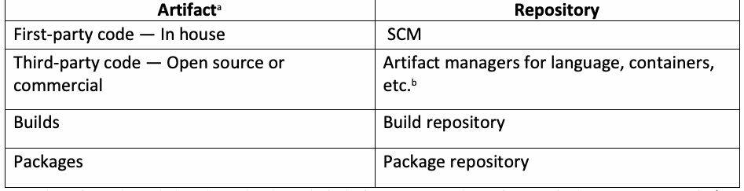
| アーティファクトᵃ | リポジトリ |
| 自社コード — 内製 | SCM |
| 第三者コード — オープンソースまたは商用 | 言語、コンテナなどのアーティファクト管理ツールᵇ |
| ビルド | ビルドリポジトリ |
| パッケージ | パッケージリポジトリ |
ᵃ Here, the artifacts include only those that go directly into the final software products. Other artifacts used for the security assurance of CI/CD processes (e.g., SBOMs, vulnerability reports, and model registries that use AI models) must also be trusted. ᵇ The addition of attestations like VSA does not necessarily imply that the artifact manager is trusted.
ᵃ ここでいうアーティファクトは、最終的なソフトウェア製品に直接取り込まれるものだけを含みます。CI/CDプロセスのセキュリティ保証に用いるその他のアーティファクト（例：SBOM、脆弱性レポート、AIモデルを用いるモデルレジストリ）も信頼できる必要があります。ᵇ VSAなどのアテステーションを追加しても、アーティファクト管理ツール自体が信頼できるとは限りません。
5. Integrating SSC Security Into CI/CD Pipelines
5. CI/CDパイプラインへのSSCセキュリティの統合
In order to outline the strategies for integrating SSC security into CI/CD pipelines, it is necessary to understand the workflows in each of the two pipelines (i.e., CI pipelines and CD pipelines) and their overall security goals.
SSCセキュリティをCI/CDパイプラインに統合する戦略を示すには、2つのパイプライン、すなわちCIパイプラインとCDパイプラインの各ワークフロー、およびそれらの全体的なセキュリティ目標を理解する必要があります。
The prerequisites to activating CI/CD pipelines include the following:
CI/CDパイプラインを稼働させるための前提条件は次のとおりです。
•Harden the CI/CD execution environment (e.g., VM or pod) to reduce its attack surface.
•CI/CD実行環境（例：仮想マシンまたはポッド）を強化し、攻撃対象領域を縮小します。
•Define roles for the actors who operate the various CI/CD pipelines (e.g., application updaters, package managers, deployment specialists).
•各CI/CDパイプラインを運用する主体（例：アプリケーション更新担当者、パッケージ管理者、デプロイ担当者）の役割を定義します。
•Identify the granular authorizations to perform various tasks, such as generating and committing code to SCMs, generating builds and packages, and checking various artifacts (e.g., builds and packages) into and out of the repositories.
•コードの生成とSCMへのコミット、ビルドとパッケージの生成、各種アーティファクト（例：ビルドとパッケージ）のリポジトリへのチェックインおよびリポジトリからのチェックアウトなど、さまざまなタスクを実行するためのきめ細かな認可を特定します。
•Automate the entire CI/CD pipeline through the deployment of appropriate tools. The driver tools for CI and CD pipelines are at a higher level and invoke a sequence of function-specific tools, such as those for code checkouts from repositories, edits and compilation, code commits, and testing (e.g., static application security testing [SAST], dynamic application security testing [DAST], and software composition analysis [SCA] testers). In general, the driver tools or build control plane execute at a higher level of trust than the individual functional steps, such as build.
•適切なツールの導入により、CI/CDパイプライン全体を自動化します。CIおよびCDパイプラインの駆動ツールはより上位のレベルにあり、リポジトリからのコードのチェックアウト、編集とコンパイル、コードコミット、テスト（例：静的アプリケーションセキュリティテスト［SAST］、動的アプリケーションセキュリティテスト［DAST］、ソフトウェア構成分析［SCA］の各テストツール）などのための機能別ツールを順に呼び出します。一般に、駆動ツールまたはビルド制御プレーンは、ビルドなどの個々の機能工程よりも高い信頼レベルで実行されます。
•Define CI/CD pipeline activities and associated security requirements for the development and deployment of application code; infrastructure as code, which contains details about the deployment platform; and policy as code and configuration code, which specify runtime settings (e.g., Yet Another Markup Language (YAML) files).
•アプリケーションコード、デプロイ基盤の詳細を含むInfrastructure as Code、ならびに実行時設定を定めるPolicy as Codeおよび構成コード（例：Yet Another Markup Language（YAML）ファイル）の開発とデプロイについて、CI/CDパイプラインの活動と関連するセキュリティ要件を定義します。
5.1. Securing Workflows in CI Pipelines
5.1. CIパイプラインのワークフロー保護
The workflows in the CI pipeline mainly consist of build operations, push/pull operations on repositories (both public and private), software updates, and code commits.
CIパイプラインのワークフローは主に、ビルド操作、リポジトリ（公開・非公開の双方）に対するプッシュ／プル操作、ソフトウェア更新、コードコミットで構成されます。
The overall security goals for the framework used for securely running CI pipelines include:
CIパイプラインを安全に実行するためのフレームワークには、全体として次のセキュリティ目標があります。
•The capability to support both cloud-native and other types of applications.
•クラウドネイティブ・アプリケーションとその他の種類のアプリケーションの双方をサポートします。
•Standard compliant evidence structures, such as metadata and digital signatures
•メタデータやデジタル署名など、標準に準拠した証拠構造を用います。
•Support for multiple hardware and software platforms
•複数のハードウェアおよびソフトウェアプラットフォームをサポートします。
•Support for infrastructures for generating the evidence (e.g., SBOM generators, Digital signature generators)
•証拠を生成する基盤（例：SBOM生成ツール、デジタル署名生成ツール）をサポートします。
The following subsections consider the SSC security tasks for the various workflows in CI. Although providing support for artifact testing (that generates tamper-proof records of test runs and associated results) is an important security goal, it is beyond the scope of this document.
以下の各節では、CI内のさまざまなワークフローに関するSSCセキュリティタスクを検討します。改ざん防止されたテスト実行記録と関連結果を生成するアーティファクトテストのサポートも重要なセキュリティ目標ですが、本書の対象範囲外です。
5.1.1. Secure Build
5.1.1. セキュアなビルド
The following tasks are required to obtain SSC security assurance in the build process:
ビルドプロセスでSSCセキュリティ保証を得るために、次のタスクが必要となります。
•Specify policies regarding the build, including (a) the use of a secure isolated platform for performing the build and hardening the build servers, (b) the tools that will be used to perform the build, and (c) the authentication/authorization required for the developers performing the build process.
•ビルドに関するポリシーを定めます。これには、(a)ビルドを実施するための安全で隔離されたプラットフォームの利用およびビルドサーバーの強化、(b)ビルドの実施に使用するツール、(c)ビルドプロセスを実施する開発者に求められる認証・認可が含まれます。
•Enforce those build policies using techniques such as an agent and policy enforcement engine.
•エージェントやポリシー適用エンジンなどの技術を用いて、これらのビルドポリシーを強制します。
•Ensure the concurrent generation of evidence for build attestation to demonstrate compliance with secure build processes during the time of software delivery.
•ソフトウェアの提供時にセキュアなビルドプロセスへの準拠を示せるよう、ビルドアテステーション用の証拠が並行して生成されることを確実にします。
A common technique for facilitating the second task is to wrap commands from a CI tool with capabilities to gather evidence and ultimately create an evidence trail of the entire SDLC [8]. The first type of evidence is from the build system itself, which should be able to confirm that the tools or processes used are in an isolated environment. This provides internal operational assurance. The second type of evidence that should be gathered consists of the hash of the final build artifact, files, libraries, and other materials used in the artifacts and all events. This is then signed by a trusted component of the build framework that is not under the control of the developers using a digital certificate to create the attestation, which provides verifiable proof of the quality of the software to consumers and enables them to verify the quality of that artifact independently from the producer of the software, thus providing consumer assurance. In this context, the artifact is the build generated by a series of CI process steps.
2つ目のタスクを実現する一般的な方法は、証拠を収集し、最終的にSDLC全体の証跡を作成する機能でCIツールのコマンドをラップすることです[8]。1種類目の証拠はビルドシステム自体から得られるもので、ビルドシステムは、使用したツールまたはプロセスが隔離された環境にあることを確認できるべきです。これは内部運用上の保証となります。収集すべき2種類目の証拠は、最終ビルドアーティファクト、ファイル、ライブラリ、およびアーティファクトで使われたその他の資材のハッシュと、すべてのイベントで構成されます。これに、開発者の管理下にないビルドフレームワークの信頼できるコンポーネントがデジタル証明書を用いて署名し、アテステーションを作成します。アテステーションは、ソフトウェアの品質についての検証可能な証明を利用者に提供し、利用者がソフトウェアの作成者とは独立にそのアーティファクトの品質を検証できるようにするため、利用者に対する保証となります。この文脈では、アーティファクトは一連のCIプロセス工程によって生成されたビルドを指します。
In the context of “concurrent generation of evidence,” the evidence generated should be enabled by a process with a higher level of trust or isolation than the build itself to protect against tampering. The generation of such evidence requires verification within the build as it occurs.
「証拠の並行生成」という文脈では、改ざんを防ぐため、生成される証拠は、ビルド自体より高い信頼レベルまたは隔離レベルを持つプロセスによって生成されるべきです。このような証拠の生成には、ビルドの進行に合わせてビルド内で検証を行うことが必要です。
The attestation for a build consists of the following components [9]:
ビルドのアテステーションは次の要素で構成されます[9]。
1.Environment attestation: Environment attestation involves an inventory of the system when the CI process happens and generally refers to the platform on which the build process is run. The components of the platform (e.g., compiler, interpreter) must be hardened, isolated, and secure.
1.環境アテステーション：CIプロセス実行時のシステムインベントリを含み、通常はビルドプロセスが実行されるプラットフォームを指します。コンパイラーやインタープリターなど、プラットフォームの構成要素は強化され、隔離され、安全でなければなりません。
2.Process attestation: Process attestation pertains to the computer programs that transformed the original source code or materials into an artifact (e.g., compilers, packaging tools) and/or the programs that performed testing on that software (i.e., code testing tool). It is sometimes difficult for tooling that simply observes CI processes to distinguish between data that should populate the process attestation and data that should populate the materials attestation. A file read by tooling that performs the source transformation may be used to influence the choices that the transformation tool makes, or it might be included in the output of the transformation itself. As a result, the population of the process attestation should be considered “best effort.”
2.プロセスアテステーション：プロセスアテステーションは、元のソースコードまたは資材をアーティファクトに変換したコンピュータープログラム（例：コンパイラー、パッケージ化ツール）、およびそのソフトウェアのテストを実施したプログラム（すなわちコードテストツール）の一方または両方に関するものです。CIプロセスを単に観察するだけのツールでは、プロセスアテステーションに入れるべきデータと資材アテステーションに入れるべきデータを区別しにくいことがあります。ソース変換を行うツールが読み込むファイルは、変換ツールが行う選択に影響を与えるために使われる場合もあれば、変換の出力そのものに含まれる場合もあります。そのため、プロセスアテステーションへのデータ投入は「ベストエフォート」と考えるべきです。
3.Materials attestation: Materials attestation pertains to any raw data and can include configuration, source code, and other data (e.g., dependencies).
3.資材アテステーション：資材アテステーションはあらゆる生データに関するものであり、設定、ソースコード、その他のデータ（例：依存関係）を含み得ます。
4.Artifacts attestation: An artifact is the result or outcome of a CI process. For example, if the CI process step involves running a compiler (e.g., GNU Compiler Collection (GCC)) on a source code written in C, the artifact that will result is an executable binary of that source code. If the step involves running a SAST tool on the same source code, the artifact will be the “Scan Result.” The step that generated it can be a final or intermediate step. An attestation pertaining to this newly generated product falls under the category of artifacts attestation.
4.アーティファクトアテステーション：アーティファクトとはCIプロセスの結果または成果物です。たとえば、CI工程でC言語のソースコードにGNU Compiler Collection（GCC）などのコンパイラーを実行した場合、生成されるアーティファクトはそのソースコードの実行可能バイナリです。同じソースコードにSASTツールを実行した場合、アーティファクトは「スキャン結果」となります。アーティファクトを生成した工程は、最終工程の場合も中間工程の場合もあります。こうして新たに生成された成果物に関するアテステーションは、アーティファクトアテステーションに分類されます。
The requirements associated with signed evidence (i.e., attestation) and its storage must include the following:
署名済み証拠（すなわちアテステーション）とその保存に関する要件には、次を含めなければなりません。
•The attestations must be cryptographically signed using a secure key.
•アテステーションは、安全な鍵を用いて暗号学的に署名されなければなりません。
•The storage location must be tamper-proof and protected using robust access control.
•保存場所は改ざん防止され、強固なアクセス制御で保護されている必要があります。
The attestations can then be used to evaluate policy compliance. A policy is a signed document that encodes the requirements for an artifact to be validated. The policy may include checks as to whether each of the functionaries involved in the CI process has used the right keys to generate the attestations, the required attestations are found, and the methodology to evaluate the attestation against its associated metadata has also been specified. The policy enables the verifiers to trace the compliance status of the artifact at any point during its life cycle.
アテステーションはその後、ポリシーへの準拠評価に使用できます。ポリシーは、アーティファクトを検証するための要件を符号化した署名付き文書です。ポリシーには、CIプロセスに関わる各実行主体がアテステーション生成に適切な鍵を用いたか、必要なアテステーションが存在するか、およびアテステーションと関連メタデータを照合する評価方法が定義されているか、といった確認項目を含められます。ポリシーを用いることで、検証者はライフサイクルの任意の時点におけるアーティファクトの準拠状況を追跡できます。
The above capabilities collectively provide the following assurances:
以上の機能によって、次の保証が得られます。
•The software was built by authorized systems using authorized tools (e.g., infrastructure for each step) in the correct sequence of steps.
•ソフトウェアが、認可済みシステムにより、認可済みツール（例：各工程のための基盤）を用いて、正しい工程順序でビルドされました。
•There is no evidence of potential tampering or malicious activity.
•改ざんまたは悪意ある活動の可能性を示す証拠がありません。
5.1.2. Secure Pull-Push Operations on Repositories
5.1.2. リポジトリに対する安全なプル／プッシュ操作
The first SSC security task is to secure source-code development practices. In the context of CI/CD pipelines, code resides in repositories, is extracted by authorized developers using a PULL operation, is modified, and is then put back into the repositories using a PUSH operation. To authorize these PULL-PUSH operations, two forms of checks are required:
最初のSSCセキュリティタスクは、ソースコード開発慣行を保護することです。CI/CDパイプラインでは、コードはリポジトリに置かれ、認可された開発者がPULL操作で取得し、変更してからPUSH操作でリポジトリに戻します。これらのPULL／PUSH操作を認可するには、次の2種類の確認が必要です。
1.The type of authentication required for developers authorized to perform the PULL-PUSH operations. The request made by the developer must be consistent with their role (e.g., application updater, package manager). Developers with “merge approval” permissions cannot approve their own merges.
1.PULL／PUSH操作の実行を認可された開発者に求められる認証の種類。開発者による要求は、その役割（例：アプリケーション更新担当者、パッケージ管理者）に適合していなければなりません。「マージ承認」権限を持つ開発者は、自らのマージを承認できません。
2.The integrity of the code in the repository can be trusted such that it can be used for further updates.
2.リポジトリ内のコードの完全性を信頼でき、後続の更新に使用できること。
The various mechanisms for ensuring the trustworthiness of the code in the repository are:
リポジトリ内のコードの信頼性を確保するさまざまな仕組みを次に示します。
•PULL-PUSH_REQ-1: The project maintainer should run automated checks on all artifacts covered in the change being pushed, such as unit tests, linters, integrity tests, security checks, and more.
原本PDFの抜粋画像
•PULL-PUSH_REQ-1：プロジェクトの保守者は、プッシュされる変更に含まれるすべてのアーティファクトに対し、単体テスト、リンター、完全性テスト、セキュリティ検査などの自動検査を実行すべきです。
•PULL-PUSH-REQ-2: CI pipelines should only be run using tools when confidence is established in the trustworthiness of the source-code origin of those tools.
•PULL-PUSH-REQ-2：CIパイプラインは、使用するツールのソースコードの出所の信頼性について確信が得られている場合にのみ、それらのツールを用いて実行すべきです。
•PULL-PUSH-REQ-3: The repository or source-code management system (e.g., GitHub, GitLab) should either a) run CI workflows in sandboxed environments without access to the network, any privileged access, or the ability to read secrets or b) have built-in protection that incorporates a delay in CI workflow runs until they are approved by a maintainer with write access. This built-in protection should go into effect when an outside contributor submits a pull request to a public repository. The setting for this protection should be at the strictest level, such as “Require approval for all outside collaborators” [10].
•PULL-PUSH-REQ-3：リポジトリまたはソースコード管理システム（例：GitHub、GitLab）は、(a)ネットワークへのアクセス、いかなる特権アクセス、およびシークレットを読み取る能力も持たないサンドボックス環境でCIワークフローを実行するか、(b)書き込み権限を持つ保守者が承認するまでCIワークフローの実行を遅らせる組み込み保護機能を備えるか、のいずれかとすべきです。この組み込み保護は、外部のコントリビューターが公開リポジトリにプルリクエストを送信したときに有効になるべきです。この保護の設定は、「すべての外部コラボレーターに承認を必須とする」[10]のように、最も厳格なレベルにすべきです。
•PULL-PUSH_REQ-4: If there are no built-in protections available in the source-code management system, then external security tools with the following features are required:
•PULL-PUSH_REQ-4：ソースコード管理システムに組み込み保護機能がない場合、次の機能を持つ外部セキュリティツールが必要です。
•Functionality to evaluate and enhance the security posture of the SCM systems with or without a policy (e.g., Open Policy Agent (OPA)) to assess the security settings of the SCM account and generate a status report with actionable recommendations.
•ポリシー（例：Open Policy Agent［OPA］）の有無にかかわらず、SCMシステムのセキュリティ態勢を評価・強化します。SCMアカウントのセキュリティ設定を評価し、実行可能な推奨事項を含む状況報告を生成します。
•Functionality to enhance the security of the source-code management system by detecting and remediating misconfigurations, security vulnerabilities, and compliance issues.
•ソースコード管理システムの設定ミス、セキュリティ脆弱性、コンプライアンス上の問題を検出して修正し、セキュリティを強化します。
An example of such a tool is the popular open-source tool OpenSSF scorecard.4
そのようなツールの例に、広く使われているオープンソースのOpenSSF Scorecardがあります。4
5.1.3. Integrity of Evidence Generation During Software Updates
5.1.3. ソフトウェア更新時の証拠生成の完全性
The software update process is typically carried out by a special class of software development tool called software update systems. Ensuring the security of these software update systems plays a critical role in the overall security of an SSC. Threats to software update systems primarily target the evidence generation process so as to erase the trail of updates and prevent the ability to determine whether the updates were legitimate or not.
ソフトウェア更新プロセスは通常、ソフトウェア更新システムと呼ばれる特別な種類のソフトウェア開発ツールによって実行されます。これらのソフトウェア更新システムのセキュリティ確保は、SSC全体のセキュリティにおいて重要な役割を果たします。ソフトウェア更新システムへの脅威は主として証拠生成プロセスを標的とし、更新の証跡を消去して、更新が正当なものであったかどうかを判断できなくすることを狙います。
There are several types of software update systems [11]:
ソフトウェア更新システムには、次の種類があります[11]。
•Package managers that are responsible for all of the software installed on a system
•システムにインストールされるすべてのソフトウェアを管理するパッケージマネージャー
•Application updaters that are only responsible for individual installed applications
•インストール済みの個々のアプリケーションだけを管理するアプリケーション更新ツール
•Software library managers that install software that adds functionality, such as plugins or programming language libraries.
•プラグインやプログラミング言語ライブラリなど、機能を追加するソフトウェアをインストールするソフトウェアライブラリ管理ツール。
The primary task performed by a software update system is to identify the files that are needed for a given update ticket and download trusted files. At first glance, it may appear that the only checks needed to establish trust in downloaded files are the various integrity and authenticity checks performed by verifying the signatures on the metadata associated with individual files or the package. However, the very process of signature generation may be vulnerable to known attacks, so software update systems require many other security measures related to signature generation and verification.
ソフトウェア更新システムの主な役割は、所定の更新チケットに必要なファイルを特定し、信頼できるファイルをダウンロードすることです。一見すると、ダウンロードしたファイルの信頼を確立するために必要な確認は、個々のファイルまたはパッケージに関連付けられたメタデータの署名を検証することで行う、各種の完全性・真正性確認だけに見えます。しかし、署名生成のプロセス自体が既知の攻撃に対して脆弱な場合があるため、ソフトウェア更新システムには署名の生成と検証に関するその他のセキュリティ対策も数多く必要です。
The evolving framework for providing security for software update systems has incorporated many of these required security measures into its specification and prescribed some others for future specifications. A framework is a set of libraries, file formats, and utilities that can be used to secure new and existing software update systems. The framework should protect the signing operation by requiring the policy defined in Sec. 5.1.1 to be satisfied prior to performing the signing operation. The following are some of the consensus goals for the framework:
ソフトウェア更新システムにセキュリティを提供するための、進化を続けるフレームワークは、これらの必要なセキュリティ対策の多くを仕様に取り込み、その他のいくつかを将来の仕様向けに規定しています。フレームワークとは、新規および既存のソフトウェア更新システムを保護するために利用できるライブラリ、ファイル形式、ユーティリティの集合です。フレームワークは、署名操作を実行する前に第5.1.1節で定義したポリシーが満たされることを要求することで、署名操作を保護すべきです。フレームワークについて合意されている目標の一部を次に示します。
•The framework should provide protection against all known attacks on the tasks performed by the software update systems, such as metadata (hash) generation, the signing process, the management of signing keys, the integrity of the authority performing the signing, key validation, and signature verification.
•フレームワークは、メタデータ（ハッシュ）の生成、署名処理、署名鍵の管理、署名を行う権限主体の完全性、鍵の検証、署名の検証など、ソフトウェア更新システムが行うタスクに対する既知のすべての攻撃からの保護を提供すべきです。
•The framework should provide a means to minimize the impacts of key compromise by supporting roles with multiple keys and threshold or quorum trust (with the exception of minimally trusted roles designed to use a single key). The compromise of roles that use highly-vulnerable keys should have minimal impact. Therefore, online keys (i.e., keys used in an automated fashion) should not be used for any role that clients ultimately trust for files they may install [11]. When keys are online, exceptional care should be taken in caring for them, such as storing them in a Hardware Security Module (HSM) and only allowing their use if the artifacts being signed pass the policy defined in Sec. 5.1.1.
•フレームワークは、複数の鍵を持つ役割と、閾値またはクォーラムによる信頼をサポートすることで、鍵侵害の影響を最小限に抑える手段を提供すべきです（単一の鍵を使うよう設計された、最小限にしか信頼されない役割を除きます）。脆弱性の高い鍵を使う役割が侵害されても、その影響は最小限であるべきです。したがって、オンライン鍵（すなわち自動化された形で使用される鍵）は、クライアントがインストールする可能性のあるファイルについて最終的に信頼するいかなる役割にも使用すべきではありません[11]。鍵がオンラインにある場合は、ハードウェアセキュリティモジュール（HSM）に保存し、署名対象のアーティファクトが第5.1.1節で定義したポリシーに合格した場合にのみ使用を許可するなど、その取り扱いに格別の注意を払うべきです。
•The framework must be flexible enough to meet the needs of a wide variety of software update systems.
•フレームワークは、幅広いソフトウェア更新システムのニーズに応えられるだけの柔軟性を備えていなければなりません。
•The framework must be easy to integrate with software update systems.
•フレームワークは、ソフトウェア更新システムに容易に統合できなければなりません。
5.1.4. Secure Code Commits
5.1.4. 安全なコードコミット
Appropriate forms of testing should be performed before code commits, and the following requirements must be met:
コードをコミットする前に適切な形態のテストを実施すべきであり、次の要件を満たさなければなりません。
•SAST and DAST tools (covering all languages used in development) should be run in CI/CD pipelines with code coverage reports being provided to developers and security personnel.
•SASTおよびDASTツール（開発で使用するすべての言語を対象とするもの）をCI/CDパイプラインで実行し、コードカバレッジの報告を開発者とセキュリティ担当者に提供すべきです。
•If open-source modules and libraries are used, dependencies must be enumerated, understood, and evaluated for policy (potentially using appropriate SCA tools). The security conditions that they should meet for their inclusion must also be tested. Dependency file detectors should detect all dependencies, including transitive dependencies with preferably no limit to the depth of nested or transitive dependencies that are to be analyzed [19].
•オープンソースのモジュールおよびライブラリを利用する場合、依存関係を列挙し、理解し、ポリシーに照らして評価しなければなりません（場合によっては適切なSCAツールを用います）。それらを採用するために満たすべきセキュリティ条件もテストしなければなりません。依存関係ファイル検出ツールは、推移的依存関係を含むすべての依存関係を検出すべきであり、分析対象とする入れ子または推移的依存関係の深さには、できれば上限を設けないことが望まれます[19]。
One SSC security measure required during code commits is the prevention of secrets getting into the committed code. This is enabled by a scanning operation for secrets and results in a feature called push protection [12], [20]. This feature should satisfy the following requirements:
コードコミット時に求められるSSCセキュリティ対策の一つは、コミットされるコードにシークレットが入り込むのを防ぐことです。これはシークレットのスキャン操作によって可能となり、プッシュ保護[12], [20]と呼ばれる機能をもたらします。この機能は次の要件を満たすべきです。
•COMMIT-REQ-1: (e.g., personal access token) Evaluate committed code for adherence to organizational policy, including the absence of secrets such as keys and Application Programming Interface (API) tokens. The detected secrets should be displayed prominently through media such as security dashboards, and appropriate alerts should be generated upon detection of policy violations with documented methods to remediate violations.
•COMMIT-REQ-1：（例：個人用アクセストークン）コミットされたコードが、鍵やアプリケーション・プログラミング・インターフェース（API）トークンなどのシークレットを含まないことを含め、組織のポリシーに適合しているかを評価します。検出されたシークレットはセキュリティダッシュボードなどの手段で目立つように表示すべきであり、ポリシー違反を検出した際には、違反を是正するための文書化された方法とともに、適切なアラートを生成すべきです。
•COMMIT-REQ-2: Push protection features should be enabled for all repositories assigned to an administrator [13]. Such protection should include the verification of developer identity/authorization, the enforcement of developer signing of code commits, and file name verification [21].
•COMMIT-REQ-2：管理者に割り当てられたすべてのリポジトリでプッシュ保護機能を有効にすべきです[13]。この保護には、開発者の身元／認可の検証、開発者によるコードコミットへの署名の強制、およびファイル名の検証を含めるべきです[21]。
5.2. Securing Workflows in CD Pipelines
5.2. CDパイプラインのワークフロー保護
Supply chain security measures also apply to controls during the CD process. The following are some due diligence measures that should be used during CD. These measures can be implemented by defining verification policies for allowing or disallowing an artifact for deployment.
サプライチェーンセキュリティ対策は、CDプロセス中の管理策にも適用されます。CD時に用いるべきデューデリジェンス対策のいくつかを以下に示します。これらの対策は、アーティファクトのデプロイを許可または不許可とする検証ポリシーを定義することで実装できます。
•DEPLOY-REQ-1: For code that is already in the repository and ready to be deployed, a security scanning sub-feature should be invoked to detect the presence of secrets in the code, such as keys and access tokens. In many instances, the repository should be scanned for the presence of secrets, even before being populated with code, since their presence in a repository can mean that the credentials are already leaked, depending on the repository’s visibility.
•DEPLOY-REQ-1：すでにリポジトリ内にありデプロイの準備ができているコードについては、セキュリティスキャンのサブ機能を呼び出し、鍵やアクセストークンなどのシークレットがコードに含まれていないかを検出すべきです。多くの場合、コードを格納する前であっても、リポジトリにシークレットが存在しないかをスキャンすべきです。リポジトリの可視性によっては、シークレットがリポジトリに存在すること自体が、認証情報がすでに漏えいしていることを意味し得るためです。
•DEPLOY-REQ-2: Before merging pull requests, it should be possible to view the details of any vulnerable versions through a form of dependency review [15], [19].
•DEPLOY-REQ-2：プルリクエストをマージする前に、何らかの形の依存関係レビュー[15], [19]を通じて、脆弱性のあるバージョンの詳細を確認できるべきです。
•DEPLOY-REQ-3: If a secure build environment and associated process have been established, it should be possible to specify that the artifact (i.e., container image) being deployed must have been generated by that build process in order to be cleared for deployment.
•DEPLOY-REQ-3：セキュアなビルド環境と関連プロセスが確立されている場合、デプロイされるアーティファクト（すなわちコンテナイメージ）がデプロイを承認されるためには、そのビルドプロセスで生成されたものでなければならないと指定できるべきです。
•DEPLOY_REQ-4: There should be evidence that the container image was scanned for vulnerabilities and attested for vulnerability findings. An important factor in vulnerability scans is the time when it was run. Since tools used to scan artifacts are continuously updated to detect new and emerging vulnerabilities, more recent scan results are more likely to be accurate and provide better assurance than results from the past. This technique enables DevOps teams to implement a proactive container security posture by ensuring that only verified container images are admitted into the environment and remain trusted during runtime [14]. Specifically, it should be possible to allow or block image deployment based on organization-defined policies.
•DEPLOY_REQ-4：コンテナイメージが脆弱性スキャンを受け、脆弱性の検出結果についてアテステーションが行われたことを示す証拠が存在すべきです。脆弱性スキャンにおける重要な要素は、それが実行された時期です。アーティファクトのスキャンに用いるツールは、新たな脆弱性や出現しつつある脆弱性を検出するために継続的に更新されるため、より新しいスキャン結果のほうが過去の結果よりも正確である可能性が高く、より高い保証を提供します。この手法により、検証済みのコンテナイメージだけが環境に受け入れられ、実行時にも信頼された状態を保つことが確実になり、DevOpsチームはプロアクティブなコンテナセキュリティ態勢を実現できます[14]。具体的には、組織が定めたポリシーに基づいて、イメージのデプロイを許可または阻止できるべきです。
•DEPLOY-REQ-5: The release build scripts should be periodically checked for malicious code. Specific tasks to be performed include:
•DEPLOY-REQ-5：リリース用ビルドスクリプトに悪意あるコードがないかを定期的に確認すべきです。実施すべき具体的なタスクには次のものがあります。
A container image should be scanned for vulnerabilities as soon as it is built, even o before it is pushed to a registry. The early scanning feature can also be built into local workflows.
コンテナイメージは、ビルドされ次第、レジストリにプッシュされる前であっても、脆弱性スキャンを行うべきです。早期スキャン機能はローカルのワークフローにも組み込むことができます。
The tools used to interact with repositories that contain container images and o language packages should be capable of integration with CD tools, thus making all activities an integral part of automated CD pipelines.
コンテナイメージや言語パッケージを格納するリポジトリとのやり取りに用いるツールは、CDツールと統合できるべきです。これにより、すべての活動が自動化されたCDパイプラインの不可欠な一部となります。
5.2.1. Secure CD Pipeline — Case Study (GitOps)
5.2.1. セキュアなCDパイプライン — ケーススタディ（GitOps）
All operations during and after a build in the CI/CD pipeline involve interacting with a central repository (e.g., Bitbucket, GitHub, and GitLab). The operations are collectively called GitOps, which is an automated deployment process facilitated by open-source tools, such as Argo CD and Flux. GitOps is carried out for both infrastructure code and application code and consist of commits, forking, and pull and push requests. The usage of GitOps covers the following [16]:
CI/CDパイプラインにおけるビルド中およびビルド後のすべての操作では、中央リポジトリ（例：Bitbucket、GitHub、GitLab）とのやり取りが発生します。これらの操作は総称してGitOpsと呼ばれ、Argo CDやFluxなどのオープンソースツールによって支援される自動デプロイプロセスです。GitOpsはインフラストラクチャコードとアプリケーションコードの両方に対して実施され、コミット、フォーク、ならびにプルリクエストおよびプッシュリクエストで構成されます。GitOpsの用途には次のものが含まれます[16]。
•Managing infrastructure as code
•Infrastructure as Codeによるインフラストラクチャの管理
•Managing and applying cluster configurations
•クラスター設定の管理と適用
•Automating the deployment of containerized applications and their configurations to distributed systems.
•コンテナ化されたアプリケーションとその設定を分散システムに自動デプロイします。
The following SSC security tasks should be applied with respect to creating configuration data prior to deployment, capturing all data pertaining to a particular release, modifying software during runtime, and performing monitoring operations:
デプロイ前の設定データの作成、特定のリリースに関するすべてのデータの取得、実行時のソフトウェアの変更、および監視操作の実施に関して、次のSSCセキュリティタスクを適用すべきです。
•GitOps-REQ-1: The process should rely on automation rather than manual operations. For example, manually configuring hundreds of YAML files to roll back a deployment on a cluster in a Git repository should be avoided.
•GitOps-REQ-1：このプロセスは、手作業ではなく自動化に依拠すべきです。たとえば、クラスター上のデプロイをロールバックするために、Gitリポジトリ内の数百ものYAMLファイルを手作業で設定することは避けるべきです。
•GitOps-REQ-2: Package managers that facilitate GitOps should preserve all data on the packages that were released, including the version numbers of all modules, all associated configuration files, and other metadata as appropriate for the software operational environment.
•GitOps-REQ-2：GitOpsを支援するパッケージマネージャーは、リリースされたパッケージに関するすべてのデータを保持すべきです。これには、すべてのモジュールのバージョン番号、関連するすべての設定ファイル、およびソフトウェア運用環境に応じたその他のメタデータが含まれます。
•GitOps-REQ-3: Changes should not be manually applied at runtime (e.g., kubectl). Instead, changes should be made to the relevant code, and a new release that incorporates those changes should be triggered. This ensures that Git commits remain the single source of truth for what runs in the cluster.
•GitOps-REQ-3：変更を実行時に手作業で適用すべきではありません（例：kubectl）。代わりに、該当するコードに変更を加え、その変更を取り込んだ新しいリリースをトリガーすべきです。これにより、クラスターで実行されるものについて、Gitコミットが唯一の信頼できる情報源であり続けることが確実になります。
•GitOps-REQ-4: Since the Git repository contains the application definitions and configuration as code, it should be pulled automatically and compared with the specified state of these configurations (i.e., monitoring and remediation for drift). For any configurations that deviate from their specified state, the following actions may be performed:
•GitOps-REQ-4：Gitリポジトリにはアプリケーションの定義と設定がコードとして格納されているため、リポジトリを自動的にプルし、これらの設定の指定された状態と比較すべきです（すなわち、ドリフトの監視と是正）。指定された状態から逸脱している設定については、次の措置を実施してもよいです。
Administrators can choose to automatically resync configurations to the defined o state.
管理者は、設定を定義された状態に自動的に再同期することを選択できます。
Notifications should be sent regarding the differences, and manual remediation o should be performed.
差異について通知を送信すべきであり、手動による是正を実施すべきです。
5.3. SSC Security for CI/CD Pipelines — Implementation Strategy
5.3. CI/CDパイプライン向けSSCセキュリティ — 実装戦略
The extensive set of steps needed for SSC security cannot be implemented all at once in the SDLC of all enterprises without a great deal of disruption to underlying business processes and operational costs. Rather, solutions that provide SSC security can be broadly classified into the following types [17]:
SSCセキュリティに必要な幅広い手順を、基盤となる業務プロセスや運用コストに大きな混乱をもたらさずに、すべての企業のSDLCに一度に実装することはできません。SSCセキュリティを提供するソリューションは、次の種類に大別できます[17]。
1.Solutions that ensure SSC security through features associated with each task in the DevSecOps pipelines:
1.DevSecOpsパイプラインの各タスクに関連する機能を通じてSSCセキュリティを確保するソリューション：
a. Verifying that the software is built correctly by ensuring tamper-proof build pipelines, such as by providing verified visibility into the dependencies and steps used in the build [18], since compromised dependencies or build tools are the greatest sources for poisoned workflows.
a. 改ざん耐性のあるビルドパイプラインを確保することにより（たとえば、ビルドで使用された依存関係と手順について検証済みの可視性を提供することにより[18]）、ソフトウェアが正しくビルドされていることを検証します。これは、侵害された依存関係やビルドツールが、汚染されたワークフローの最大の発生源であるためです。
b. Including features for the specification of checklists for each step of the delivery pipeline to provide guidance for implementation and to check and enforce controls for complying with checklists.
b. デリバリーパイプラインの各段階にチェックリストを定義する機能を設け、実装方法を案内し、チェックリストに沿った管理策の遵守を確認・強制します。
2.Solutions that ensure integrity and provenance through digital signatures and attestations
2.デジタル署名とアテステーションによって完全性と来歴を確保するソリューション
3.Strategy to ensure that running code is up to date, such as instituting a “build horizon” (i.e., code that is older than a certain time period should not be launched), to keep production as close as possible to the committed code in the repositories.
3.実行中のコードが最新であることを確実にする戦略。たとえば「ビルドホライズン」（すなわち、一定期間より古いコードは起動すべきでないとするもの）を設け、本番環境をリポジトリにコミットされたコードに可能な限り近い状態に保ちます。
4.Securing CI/CD clients to prevent malicious code from stealing confidential information (e.g., proprietary source code, signing keys, cloud credentials), reading environment variables that may contain secrets, or exfiltrating data to an adversary-controlled remote endpoint.
4.CI/CDクライアントを保護し、悪意あるコードが機密情報（例：プロプライエタリなソースコード、署名鍵、クラウド認証情報）を盗むこと、シークレットを含む可能性のある環境変数を読むこと、攻撃者が管理するリモートエンドポイントへデータを持ち出すことを防ぎます。
6. Summary and Conclusions
6. 要約と結論
This document provided an overview of strategies for integrating SSC security assurance measures into the various workflows associated with CI/CD pipelines, which is a methodology in the DevSecOps paradigm that is widely used for the development and deployment of cloud-native applications. However, no recommendations were provided with respect to the specific artifacts and frameworks associated with SSC security, such as SBOMs, code signing, and attestation. This is due to the fact that specifications and the standards associated with them are still evolving as part of projects in government institutions and industry forums. Further, NIST is aware of the emergence of a DevSecOps platform that provides an integrated set of services covering both CI and CD pipelines. Since this platform is not yet mature and there is a lack of consensus regarding the set of baseline features pertaining to it, the requirements for the secure use of this platform to carry out the activities in the CI/CD workflows are not discussed in this document.
本書では、クラウドネイティブ・アプリケーションの開発とデプロイに広く用いられるDevSecOpsパラダイムの方法論であるCI/CDパイプラインに関連する各種ワークフローへ、SSCセキュリティ保証対策を統合する戦略を概説しました。一方、SBOM、コード署名、アテステーションなど、SSCセキュリティに関係する個々のアーティファクトやフレームワークについては、仕様および関連標準が政府機関や業界フォーラムのプロジェクトを通じて現在も策定中であるため、具体的な推奨事項を示していません。また、NISTはCIパイプラインとCDパイプラインの両方を対象とするサービス統合型のDevSecOpsプラットフォームが登場していることを把握しています。しかし、このプラットフォームはまだ成熟しておらず、ベースライン機能群について合意がありません。そのため、CI/CDワークフローの活動を実行する際にこのプラットフォームを安全に使用するための要件は、本書では扱いません。
References
参考文献
[1] Chandramouli R (2022) Implementation of DevSecOps for a Microservices-based Application with Service Mesh. (National Institute of Standards and Technology, Gaithersburg, MD), NIST Special Publication (SP) NIST SP 800-204C.
[1] Chandramouli R（2022）『サービスメッシュを備えたマイクロサービスベースのアプリケーション向けDevSecOpsの実装』。（米国国立標準技術研究所、メリーランド州ゲイザースバーグ）、NIST特別刊行物（SP）NIST SP 800-204C。
https://doi.org/10.6028/NIST.SP.800-204C
https://doi.org/10.6028/NIST.SP.800-204C
[2] Souppaya M, Scarfone K, Dodson D (2022) Secure Software Development Framework (SSDF) Version 1.1: Recommendations for Mitigating the Risk of Software Vulnerabilities. (National Institute of Standards and Technology, Gaithersburg, MD), NIST Special Publication (SP) NIST SP 800-218. https://doi.org/10.6028/NIST.SP.800-218
[2] Souppaya M、Scarfone K、Dodson D（2022）『セキュアソフトウェア開発フレームワーク（SSDF）バージョン1.1：ソフトウェア脆弱性リスクを緩和するための推奨事項』。（米国国立標準技術研究所、メリーランド州ゲイザースバーグ）、NIST特別刊行物（SP）NIST SP 800-218。https://doi.org/10.6028/NIST.SP.800-218
[3] EO 14028 (2021) Improving the Nation’s Cybersecurity. Available at https://www.federalregister.gov/documents/2021/05/17/2021-10460/improving-the-nations-cybersecurity [4] Goud N (2021) What is Solarigate. Available at https://www.cybersecurity-insiders.com/what-is-solorigate/ [5] Berger A (2023) What is Log4Shell? Available at https://www.dynatrace.com/news/blog/what-is-log4shell/#:~:text=Log4Shell%20is%20a%20software%20vulnerability,logging%20error%20messages%20in%20applications [6] Joint Task Force (2020) Security and Privacy Controls for Information Systems and Organizations. (National Institute of Standards and Technology, Gaithersburg, MD), NIST Special Publication (SP) 800-53, Rev. 5. Includes updates as of December 10, 2020. https://doi.org/10.6028/NIST.SP.800-53r5 [7] Lorenc D (2021) Zero Trust Supply Chain Security. Available at https://dlorenc.medium.com/zero-trust-supply-chain-security-e3fb8b6973b8 [8] Testify/Witness (2023) Witness – Secure Your Supply Chain. Available at https://github.com/testifysec/witness/ [9] Kennedy C (2021) What is a Software Supply Chain Attestation – and Why do I need it? Available at https://www.testifysec.com/blog/what-is-a-supply-chain-attestation/ [10] Gelb Y (2023) Mass Scanning of Popular GitHub Repos for CI Misconfiguration. Available at https://medium.com/checkmarx-security/mass-scanning-of-popular-github-repos-for-ci-misconfiguration-cd36ad6be788 [11] TUF V1.0.31 (2022) The Update Framework Specification. Available at https://theupdateframework.github.io/specification/latest/ [12] Malik Z, Sulakian M (2023) Push Protection is generally available. Available at https://github.blog/2023-05-09-push-protection-is-generally-available-and-free-for-all-public-repositories/?utm_source=thenewstack&utm_medium=website&utm_content=inline-mention&utm_campaign=platform [13] GitHub Docs (2023) Enabling Security Features for Multiple Repositories. Available at https://docs.github.com/en/enterprise-cloud@latest/code-security/security-overview/enabling-security-features-for-multiple-repositories
原本PDFの抜粋画像
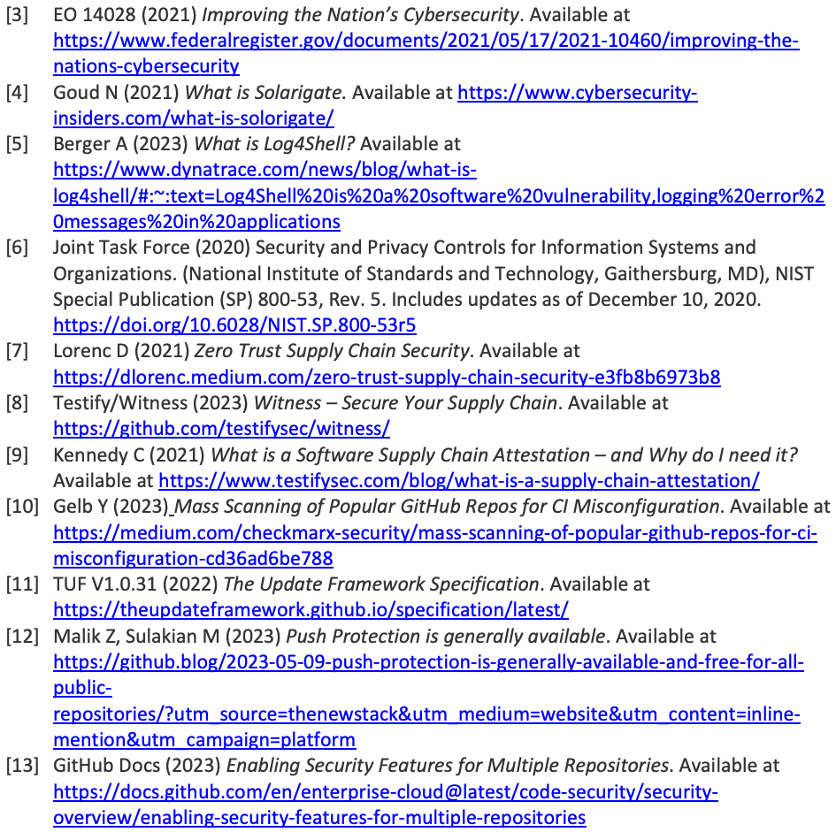
[3] 大統領令14028（2021）「国家のサイバーセキュリティの向上」。入手先：https://www.federalregister.gov/documents/2021/05/17/2021-10460/improving-the-nations-cybersecurity [4] Goud N（2021）「Solarigateとは何か」。入手先：https://www.cybersecurity-insiders.com/what-is-solorigate/ [5] Berger A（2023）「Log4Shellとは何か」。入手先：https://www.dynatrace.com/news/blog/what-is-log4shell/#:~:text=Log4Shell%20is%20a%20software%20vulnerability,logging%20error%20messages%20in%20applications [6] Joint Task Force（2020）『情報システムおよび組織のセキュリティとプライバシー管理策』。（米国国立標準技術研究所、メリーランド州ゲイザースバーグ）、NIST特別刊行物（SP）800-53 Rev. 5。2020年12月10日までの更新を含みます。https://doi.org/10.6028/NIST.SP.800-53r5 [7] Lorenc D（2021）「ゼロトラスト・サプライチェーンセキュリティ」。入手先：https://dlorenc.medium.com/zero-trust-supply-chain-security-e3fb8b6973b8 [8] Testify/Witness（2023）「Witness — サプライチェーンを保護」。入手先：https://github.com/testifysec/witness/ [9] Kennedy C（2021）「ソフトウェアサプライチェーンのアテステーションとは何か、なぜ必要か」。入手先：https://www.testifysec.com/blog/what-is-a-supply-chain-attestation/ [10] Gelb Y（2023）「人気のGitHubリポジトリでCI設定ミスを大規模スキャン」。入手先：https://medium.com/checkmarx-security/mass-scanning-of-popular-github-repos-for-ci-misconfiguration-cd36ad6be788 [11] TUF V1.0.31（2022）『The Update Framework仕様』。入手先：https://theupdateframework.github.io/specification/latest/ [12] Malik Z、Sulakian M（2023）「プッシュ保護が一般提供開始」。入手先：https://github.blog/2023-05-09-push-protection-is-generally-available-and-free-for-all-public-repositories/?utm_source=thenewstack&utm_medium=website&utm_content=inline-mention&utm_campaign=platform [13] GitHub Docs（2023）「複数のリポジトリでのセキュリティ機能の有効化」。入手先：https://docs.github.com/en/enterprise-cloud@latest/code-security/security-overview/enabling-security-features-for-multiple-repositories
[14] Cloud Build (2023) Securing Image Deployments to Cloud Run and GKE. Available at https://cloud.google.com/build/docs/securing-builds/secure-deployments-to-run-gke [15] GitHub Docs (2023) About dependency review. Available at https://docs.github.com/en/enterprise-cloud@latest/code-security/supply-chain-security/understanding-your-software-supply-chain/about-dependency-review [16] Williams A (2021) A Blueprint for Supply Chain Security. Published by Newstack [17] Crane D (2023) Five Stages for A Secure Software Supply Chain. Available at https://danacrane.medium.com/five-stages-for-a-secure-software-supply-chain-f8420841cc3a [18] CyRise (2023) Supply Chain Security with Ensignia. Available at https://medium.com/@cyrise/supply-chain-security-with-ensignia-483c1d872639 [19] GitLab Docs (2023) Dependency Scanning. Available at https://docs.gitlab.com/ee/user/application_security/dependency_scanning/index.html [20] GitLab Docs (2023) Secret Detection. Available at https://docs.gitlab.com/ee/user/application_security/secret_detection/ [21] GitLab Docs (2023) Push Rules. Available at https://docs.gitlab.com/ee/user/project/repository/push_rules.html
原本PDFの抜粋画像
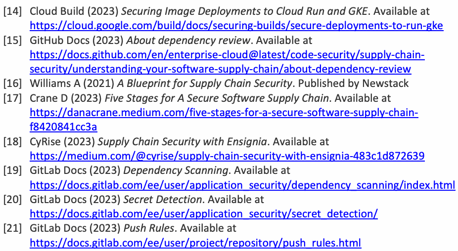
[14] Cloud Build（2023）「Cloud RunおよびGKEへのイメージデプロイの保護」。入手先：https://cloud.google.com/build/docs/securing-builds/secure-deployments-to-run-gke [15] GitHub Docs（2023）「依存関係レビューについて」。入手先：https://docs.github.com/en/enterprise-cloud@latest/code-security/supply-chain-security/understanding-your-software-supply-chain/about-dependency-review [16] Williams A（2021）『サプライチェーンセキュリティの設計図』。Newstack刊。 [17] Crane D（2023）「安全なソフトウェアサプライチェーンの5段階」。入手先：https://danacrane.medium.com/five-stages-for-a-secure-software-supply-chain-f8420841cc3a [18] CyRise（2023）「Ensigniaによるサプライチェーンセキュリティ」。入手先：https://medium.com/@cyrise/supply-chain-security-with-ensignia-483c1d872639 [19] GitLab Docs（2023）「依存関係スキャン」。入手先：https://docs.gitlab.com/ee/user/application_security/dependency_scanning/index.html [20] GitLab Docs（2023）「シークレット検出」。入手先：https://docs.gitlab.com/ee/user/application_security/secret_detection/ [21] GitLab Docs（2023）「プッシュルール」。入手先：https://docs.gitlab.com/ee/user/project/repository/push_rules.html
Appendix A. Mapping of Recommended Security Tasks in CI/CD Pipelines to Recommended High-Level Practices in SSDF
付録A. CI/CDパイプラインにおける推奨セキュリティタスクと、SSDFの推奨ハイレベル実践との対応
Table 2. Mapping of recommended CI/CD pipeline security tasks to SSDF practices
表2. CI/CDパイプラインの推奨セキュリティタスクとSSDF実践との対応
| Section | Recommended Security Tasks in CI/CD Pipeline | Recommended High-Level Practice in SSDF |
| 5.1.1 Secure Build — Policies for Build Process and Mechanisms to Enforce Policies 5.2 Securing Workflows in CD Pipelines | Specify policies regarding the build. The policies include (a) the use of a secure isolated platform for performing the build, (b) the tools that will be used to perform the build, and (c) the authentication/ | Define Security Requirements for Software Development (PO.1): Ensure that the security requirements for software development are known at all times so that they can be considered throughout the SDLC, and the duplication of effort can be minimized. This includes requirements from internal sources (e.g., the organization’s policies, business objectives, and risk management strategy) and external sources (e.g., applicable laws and regulations). |
原本PDFの抜粋画像
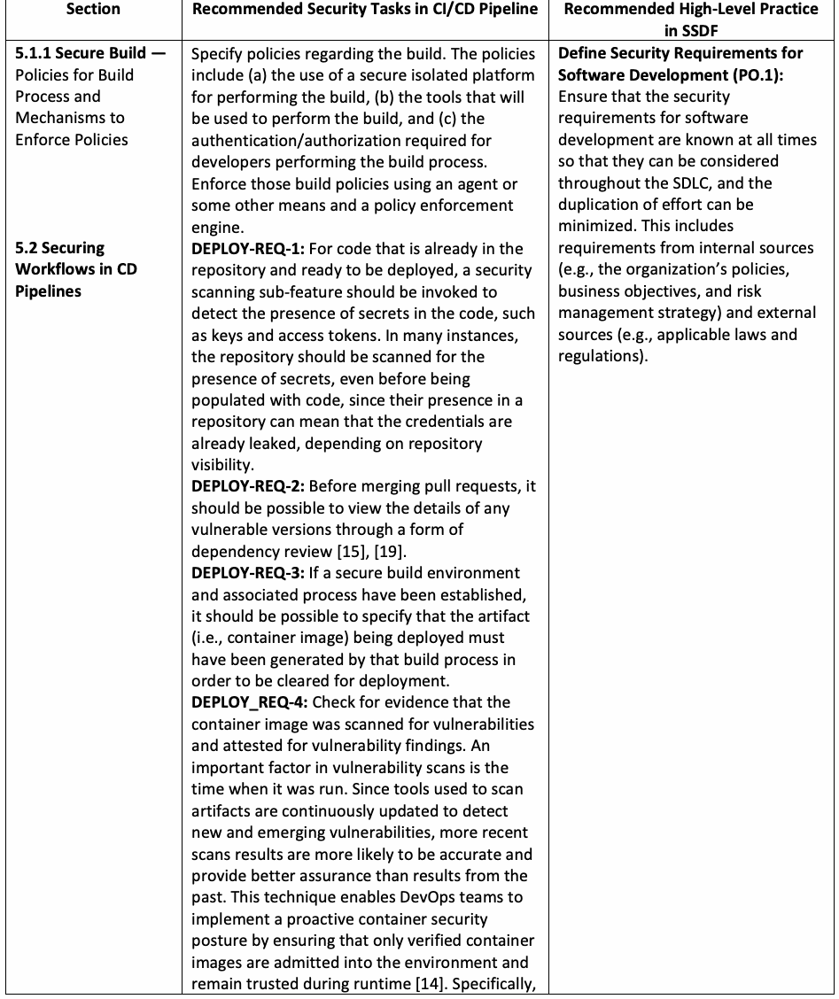
| 節 | CI/ | SSDFの推奨ハイレベル実践 |
| 5.1.1 セキュアビルド — ビルドプロセスの方針と方針を強制する仕組み 5.2 CDパイプラインにおけるワークフローの保護 | ビルドに関する方針を定めます。この方針には、(a)ビルドの実行に安全で隔離されたプラットフォームを使用すること、(b)ビルドの実行に使用するツール、(c)ビルドプロセスを実行する開発者に必要な認証・認可が含まれます。エージェントまたはその他の手段とポリシー適用エンジンを用いて、これらのビルド方針を強制します。DEPLOY-REQ-1：すでにリポジトリにあり、デプロイの準備ができているコードについては、鍵やアクセストークンなど、コード内のシークレットの存在を検出するために、セキュリティスキャンのサブ機能を呼び出すべきです。リポジトリの可視性によっては、リポジトリにシークレットが存在することは認証情報がすでに漏えいしていることを意味し得るため、多くの場合、コードが格納される前であっても、リポジトリをスキャンしてシークレットの有無を確認すべきです。DEPLOY-REQ-2：プルリクエストをマージする前に、何らかの形の依存関係レビュー[15]、[19]を通じて、脆弱性のあるバージョンの詳細を確認できるべきです。DEPLOY-REQ-3：セキュアなビルド環境と関連プロセスが確立されている場合、デプロイされるアーティファクト（すなわちコンテナイメージ）は、デプロイを許可されるためにはそのビルドプロセスによって生成されたものでなければならない、と指定できるべきです。DEPLOY | ソフトウェア開発のセキュリティ要件を定義する（PO |
| Section | Recommended Security Tasks in CI/CD Pipeline | Recommended High-Level Practice in SSDF |
| it should be possible to allow or block image deployment based on organization-defined policies. DEPLOY-REQ-5: Periodically check the release build scripts for malicious code. The tasks to be performed include: • A container should be scanned for vulnerabilities as soon as it is built, even before it is pushed to a registry. The early scanning feature can also be built into local workflows. • The tools used to interact with repositories that contain container images and language packages should be capable of integration with CD tools, thus making all activities an integral part of automated CD pipelines. | ||
| 5 Integrating SSC Security in CI/CD Pipelines | The prerequisites for activating CI/CD pipelines are: • Define roles for the actors operating the various CI/CD pipelines (e.g., application updaters, package managers, deployment specialists). • Identify the granular authorizations to perform various tasks, such as generating and committing code to SCMs, generating builds and packages, and checking various artifacts (e.g., builds and packages) into and out of the repositories. | Implement Roles and Responsibilities (PO.2): Ensure that everyone inside and outside of the organization involved in the SDLC is prepared to perform their SDLC- related roles and responsibilities throughout the SDLC. |
| 5 Integrating SSC Security in CI/CD Pipelines | The entire CI/CD pipeline must be automated through the deployment of appropriate tools as a prerequisite for activating CI/CD pipelines. The driver tools for CI and CD pipelines are at a higher level and invoke a sequence of function- specific tools, such as those for code checkouts from repositories, edits and compilation, code commits, and testing (e.g., static application security testing [SAST], dynamic application security testing [DAST], and software composition analysis [SCA]. In general, the driver tools or build control plane execute at a higher level of trust than the individual functional steps, such as build. | Implement Supporting Toolchains (PO.3): Use automation to reduce human effort and improve the accuracy, reproducibility, usability, and comprehensiveness of security practices throughout the SDLC, as well as provide a way to document and demonstrate the use of these practices. Toolchains and tools may be used at different levels of the organization, such as organization- wide or project-specific, and may address a particular part of the SDLC, like a build pipeline. |
原本PDFの抜粋画像
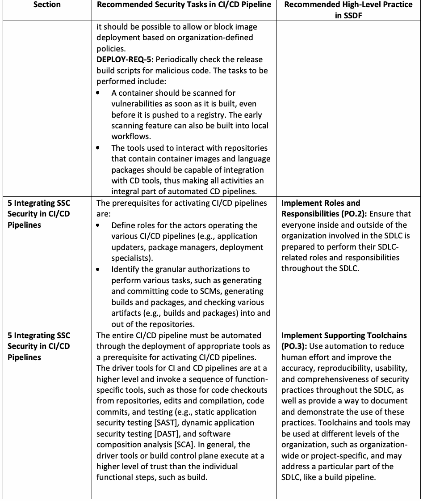
| 節 | CI/ | SSDFの推奨ハイレベル実践 |
| 組織が定めた方針に基づいて、イメージのデプロイを許可またはブロックできるべきです。DEPLOY-REQ-5：リリース用ビルドスクリプトに悪意あるコードがないか定期的に確認します。実行すべきタスクには次のものが含まれます。• コンテナは、ビルドされ次第、レジストリにプッシュされる前であっても、脆弱性スキャンを受けるべきです。この早期スキャン機能は、ローカルワークフローに組み込むこともできます。• コンテナイメージや言語パッケージを含むリポジトリとのやり取りに用いるツールは、CDツールと統合できるべきであり、それによってすべての活動が自動化されたCDパイプラインの不可欠な一部となります。 | ||
| 5 CI/ | CI/ | 役割と責任を実装する（PO |
| 5 CI/ | CI/ | サポート用ツールチェーンを実装する（PO |
| Section | Recommended Security Tasks in CI/CD Pipeline | Recommended High-Level Practice in SSDF |
| 5.1.4 Secure Code Commits | Appropriate forms of testing should be performed before code commits, and the following requirements must be met: • SAST and DAST tools (covering all languages used in development) should be run in CI/CD pipelines with code coverage reports being provided to developers and security personnel. • If open-source modules and libraries are used, dependencies must be enumerated, understood, and evaluated for policy (potentially using appropriate SCA tools). The security conditions they should meet for their inclusion must also be tested. Dependency file detectors should detect all dependencies, including transitive dependencies with preferably no limit to the depth of nested or transitive dependencies that are to be analyzed [19]. | Define and Use Criteria for Software Security Checks (PO.4): Help ensure that the software resulting from the SDLC meets the organization’s expectations by defining and using criteria for checking the software’s security during development. |
| 5.1.1 Secure Build Policies for Build Process and Mechanisms for Enforcement of Policies | Already covered under meeting requirements for PO.1. In addition: 1. Environment attestation: Environment attestation involves an inventory of the system when the CI process happens. It generally refers to the platform on which the build process is run. This platform must be hardened, isolated, and secure. | Implement and Maintain Secure Environments for Software Development (PO.5): Ensure that all components of the environments for the SDLC are strongly protected from internal and external threats to prevent the environments or the software in them from being compromised. Examples of SDLC components include development, build, test, and deployment. |
| 5.1.2 Secure PULL- PUSH Operations on Repositories | All forms of code used in the SDLC reside in repositories. Code is extracted from these repositories by authorized developers using a PULL operation, modified, and then put back into the repositories using a PUSH operation. To authorize these PULL-PUSH operations, two forms of checks are required: 1. The type of authentication required for developers authorized to perform the PULL-PUSH operations. The request made by the developer must be consistent with their role (e.g., application updater, package manager). Developers with “merge approval” permissions cannot approve their own merges. | Protect All Forms of Code From Unauthorized Access and Tampering (PS.1): Help prevent unauthorized changes to code, both inadvertent and intentional, that could circumvent or negate the intended security characteristics of the software. For code that is not intended to be publicly accessible, this helps prevent theft and may make it more difficult or time- consuming for attackers to find vulnerabilities in the software. |
原本PDFの抜粋画像
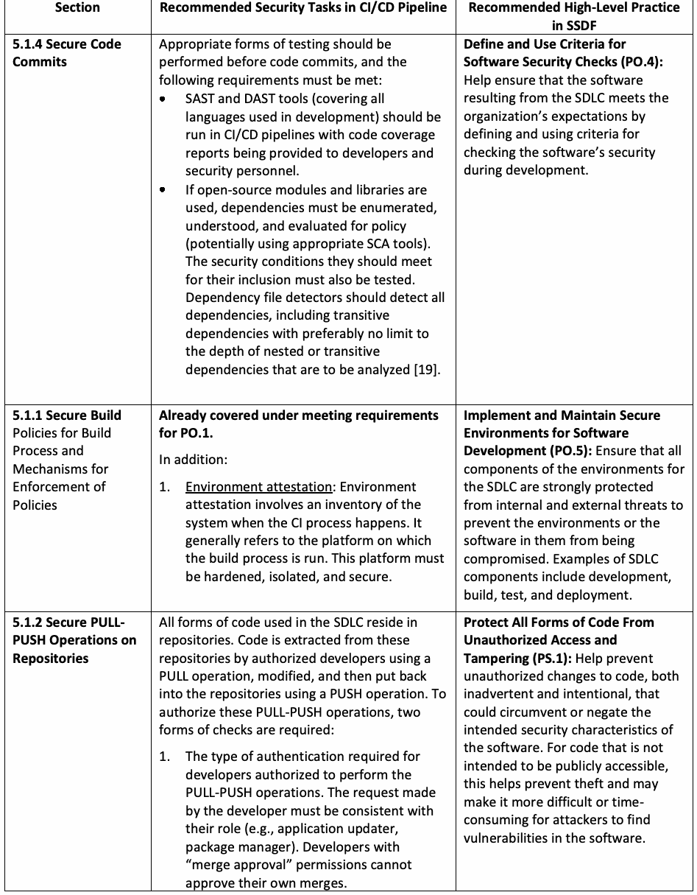
| 節 | CI/ | SSDFの推奨ハイレベル実践 |
| 5.1.4 セキュアなコードコミット | コードコミットの前に適切な形式のテストを実施すべきであり、次の要件を満たさなければなりません。• SASTおよびDASTツール（開発で使用されるすべての言語を対象とするもの）をCI/ | ソフトウェアセキュリティ確認の基準を定義し、使用する（PO |
| 5.1.1 セキュアビルド ビルドプロセスの方針と方針の強制の仕組み | PO | ソフトウェア開発のためのセキュアな環境を実装し、維持する（PO |
| 5.1.2 リポジトリに対するセキュアなPULL-PUSH操作 | SDLCで使用されるあらゆる形式のコードはリポジトリに存在します。コードは、認可された開発者によってPULL操作でこれらのリポジトリから取り出され、変更されたうえで、PUSH操作でリポジトリに戻されます。これらのPULL-PUSH操作を認可するには、2種類の確認が必要です。1 | あらゆる形式のコードを不正アクセスおよび改ざんから保護する（PS |
| Section | Recommended Security Tasks in CI/CD Pipeline | Recommended High-Level Practice in SSDF |
| 2. The integrity of the code in the repository can be trusted such that it can be used for further updates. | ||
| 5.1.3 Integrity of Evidence Generation During Software Updates (To provide assurance to acquirers that the software they get is legitimate, steps are taken to protect the integrity of evidence generation tasks) | 1. The framework should provide protection against all known attacks on the tasks performed by the software update systems, such as metadata (hash) generation, the signing process, the management of signing keys, the integrity of the authority performing the signing, key validation, and signature verification. 2. The framework should provide a means to minimize the impact of key compromise by supporting roles with multiple keys and threshold or quorum trust (with the exception of minimally trusted roles designed to use a single key). The compromise of roles that use highly- vulnerable keys should have minimal impact. Therefore, online keys (i.e., keys used in an automated fashion) must not be used for any role that clients ultimately trust for files they may install [11]. When keys are online, exceptional care should be taken in caring for them, such as storing them in an HSM and only allowing their use if the artifacts being signed pass the policy defined in Sec. 5.1.1. 3. The framework must be flexible enough to meet the needs of a wide variety of software update systems. 4. The framework must be easy to integrate with software update systems. | Provide a Mechanism for Verifying Software Release Integrity (PS.2): Help software acquirers ensure that the software they acquire is legitimate and has not been tampered with. |
| 5.2.1 Secure CD Pipeline — Case Study (GitOps) | The following SSC security tasks should be applied when creating configuration data prior to deployment, capturing all data pertaining to a particular release, modifying software during runtime, and performing monitoring operations: • GitOps-REQ-2: Package managers that facilitate GitOps should preserve all data on the packages that were released, including the version numbers of all modules, all associated configuration files, and other metadata as appropriate for the software operational environment. | Archive and Protect Each Software Release (PS.3): Preserve software releases in order to help identify, analyze, and eliminate vulnerabilities discovered in the software after release. |
原本PDFの抜粋画像
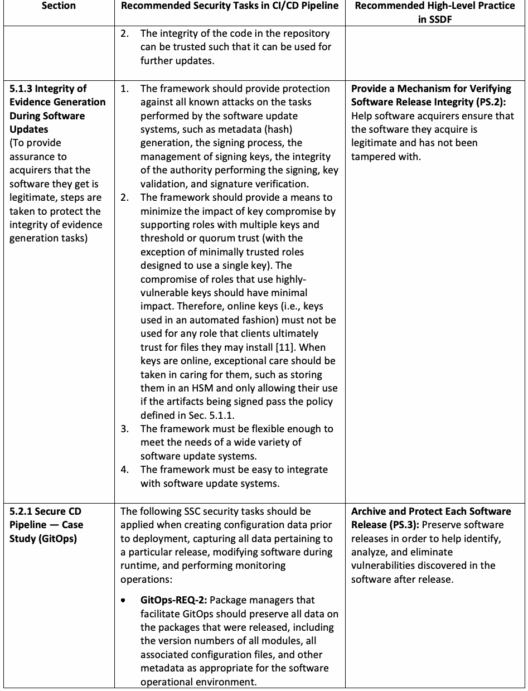
| 節 | CI/ | SSDFの推奨ハイレベル実践 |
| 2. リポジトリ内のコードの完全性が信頼でき、そのコードを以後の更新に使用できること。 | ||
| 5.1.3 ソフトウェア更新時の証拠生成の完全性（取得者に対し、入手するソフトウェアが正当なものであるという保証を提供するため、証拠生成タスクの完全性を保護する措置を講じる） | 1. フレームワークは、メタデータ（ハッシュ）の生成、署名プロセス、署名鍵の管理、署名を実行する権限主体の完全性、鍵の検証、署名の検証など、ソフトウェア更新システムが実行するタスクに対する既知のすべての攻撃からの保護を提供すべきです。2 | ソフトウェアリリースの完全性を検証する仕組みを提供する（PS |
| 5.2.1 セキュアなCDパイプライン — ケーススタディ（GitOps） | デプロイ前に設定データを作成するとき、特定のリリースに関するすべてのデータを取得するとき、実行時にソフトウェアを変更するとき、および監視操作を実行するときには、次のSSCセキュリティタスクを適用すべきです。• GitOps-REQ-2：GitOpsを支援するパッケージマネージャーは、すべてのモジュールのバージョン番号、関連するすべての設定ファイル、およびソフトウェアの運用環境に応じた適切なその他のメタデータを含め、リリースされたパッケージに関するすべてのデータを保持すべきです。 | 各ソフトウェアリリースをアーカイブし、保護する（PS |
| Section | Recommended Security Tasks in CI/CD Pipeline | Recommended High-Level Practice in SSDF |
| 5.1.2 Secure PULL-PUSH Operations on Repositories (Implements secure coding and build processes to improve security through various checks during PULL-PUSH operations) | • PULL-PUSH_REQ-1: The project maintainer should run automated checks on all artifacts covered in the pull request, such as unit tests, linters, integrity tests, security checks, and more. • PULL-PUSH-REQ-2: CI pipelines should only use external tools (e.g., Jenkins) when confidence is established in the trustworthiness of the source-code origin. • PULL-PUSH-REQ-3: The repository or source-code management system (e.g., GitHub, GitLab) should have built-in protection that incorporates a delay in CI workflow runs until they are approved by a maintainer with write access. This built-in protection should go into effect when an outside contributor submits a pull request to a public repository. The setting for this protection should be at the strictest level, such as “Require approval for all outside collaborators” [10]. • PULL-PUSH_REQ-4: If there are no built-in protections available in the source-code management system, then external security tools with the following features are required: Functionality to evaluate and enhance the security posture of the SCM systems with or without a policy (e.g., OPA) to assess the security settings of the SCM account and generate a status report with actionable recommendations Functionality to enhance the o security of the source-code management system by detecting and remediating misconfigurations, security vulnerabilities, and compliance issues | Create Source Code by Adhering to Secure Coding Practices (PW.5): Decrease the number of security vulnerabilities in the software and reduce costs by minimizing vulnerabilities introduced during source-code creation that meet or exceed organization-defined vulnerability severity criteria. |
| 5.1.1 Secure Build (Addresses the requirements for PW.6 through security requirements for the build platform) | Environment attestation: Environment attestation involves an inventory of the system when the CI process happens and generally refers to the platform on which the build process is run. The components of the platform (e.g., compiler, interpreter) must be hardened, isolated, and secure. | Configure the Compilation, Interpreter, and Build Processes to Improve Executable Security (PW.6): Decrease the number of security vulnerabilities in the software and reduce costs by eliminating vulnerabilities before testing occurs. |
原本PDFの抜粋画像
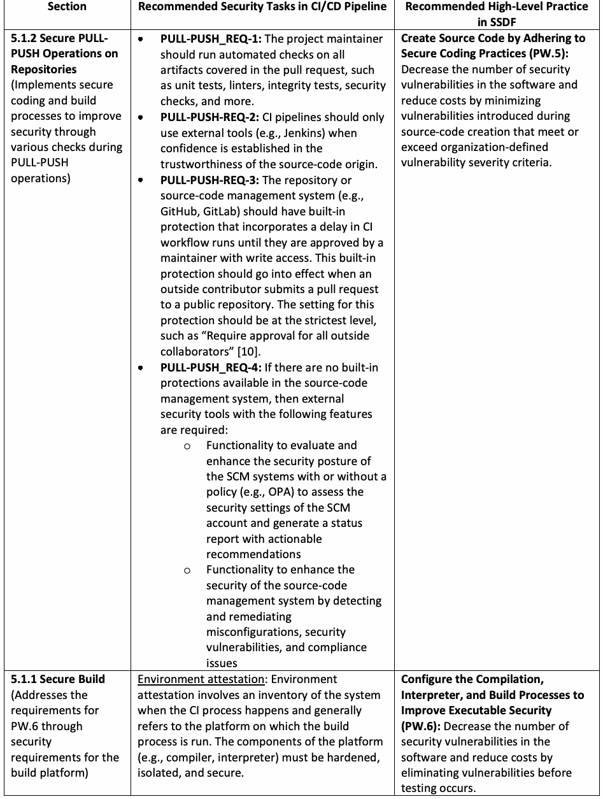
| 節 | CI/ | SSDFの推奨ハイレベル実践 |
| 5.1.2 リポジトリに対するセキュアなPULL-PUSH操作（PULL-PUSH操作時の各種の確認を通じてセキュリティを向上させる、セキュアなコーディングおよびビルドのプロセスを実装する） | • PULL-PUSH | セキュアコーディングの実践に従ってソースコードを作成する（PW |
| 5.1.1 セキュアビルド（ビルドプラットフォームに対するセキュリティ要件を通じてPW | 環境アテステーション：環境アテステーションは、CIプロセスが行われる時点のシステムのインベントリを伴い、一般に、ビルドプロセスが実行されるプラットフォームを指します。プラットフォームのコンポーネント（例：コンパイラー、インタープリター）は、強化され、隔離され、安全でなければなりません。 | 実行可能ファイルのセキュリティを向上させるよう、コンパイル、インタープリター、およびビルドのプロセスを構成する（PW |
| Section | Recommended Security Tasks in CI/CD Pipeline | Recommended High-Level Practice in SSDF |
| 5.1.4 Secure Code Commits | Appropriate forms of testing should be performed before code commits, and the following requirements must be met: • Both SAST and DAST tools used in CI/CD pipelines must provide coverage for the different language systems used in cloud- native applications. • If open-source modules and libraries are used, dependencies must be detected using appropriate SCA tools, and the security conditions they should meet for their inclusion must also be tested. | Test Executable Code to Identify Vulnerabilities and Verify Compliance With Security Requirements (PW.8): Identify vulnerabilities so that they can be corrected before the software is released. Using automated methods lowers the effort and resources needed to detect vulnerabilities and improves traceability and repeatability. Executable code includes binaries, directly executed bytecode and source code, and any other form of code that an organization deems executable. |
| 5 Integrating SSC Security into CI/CD Pipelines | Define CI/CD pipeline activities and associated security requirements for the development and deployment of application code; infrastructure as code, which contains details about the deployment platform; and policy as code and configuration code, which specify runtime settings (e.g., YAML files). | Configure Software to Have Secure Settings by Default (PW.9): Improve the security of the software at the time of installation to reduce the likelihood of the software being deployed with weak security settings, thus putting it at greater risk of compromise. |
原本PDFの抜粋画像
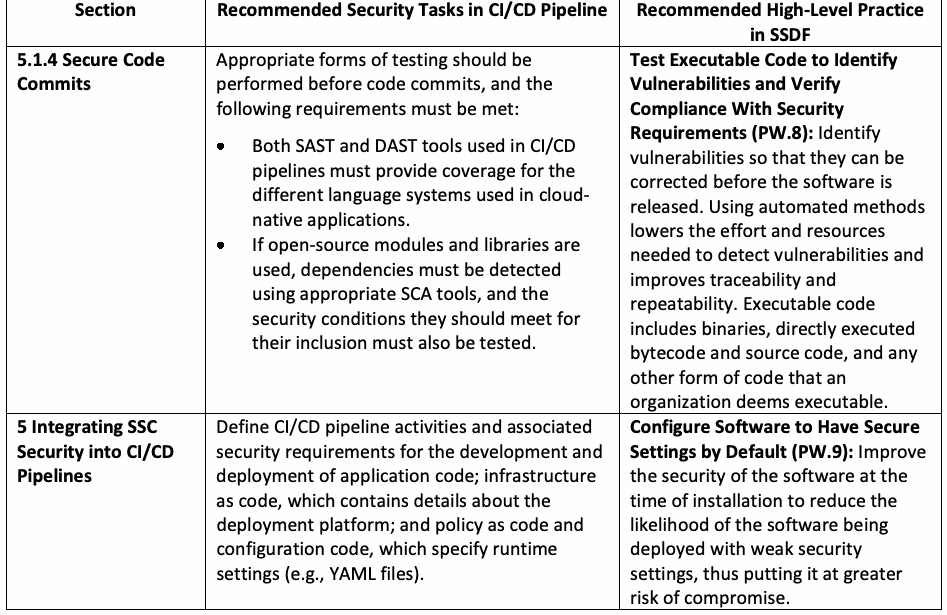
| 節 | CI/ | SSDFの推奨ハイレベル実践 |
| 5.1.4 セキュアなコードコミット | コードコミットの前に適切な形式のテストを実施すべきであり、次の要件を満たさなければなりません。• CI/ | 脆弱性を特定し、セキュリティ要件への準拠を検証するために実行可能コードをテストする（PW |
| 5 CI/ | アプリケーションコード、デプロイプラットフォームに関する詳細を含むInfrastructure as Code、ならびに実行時設定を規定するPolicy as Codeおよび構成コード（例：YAMLファイル）の開発とデプロイについて、CI/ | ソフトウェアが既定でセキュアな設定を持つよう構成する（PW |
Appendix B. Justification for the Omission of Certain Measures Related to SSDF Practices in This Document
付録B. 本書でSSDF実践に関連する一部の対策を省略した理由
Table 3. Justification for the omission of certain SSDF practices
表3. 一部のSSDF実践を省略した理由
| SSDF Practice | Justification for Omission |
| Produce Well-Secured Software (PW) PW1 through PW4, PW7 | These practices pertain to secure software design, review of the design, and software reuse. CI/CD pipelines focus on setting up the environment for secure development and deployment in DevSecOps SDLC rather than software design. |
| Respond to Vulnerabilities (RV) RV1 through RV3 | Vulnerability management strategies are at the organization policy level and are not specific to CI/CD pipelines. |
原本PDFの抜粋画像
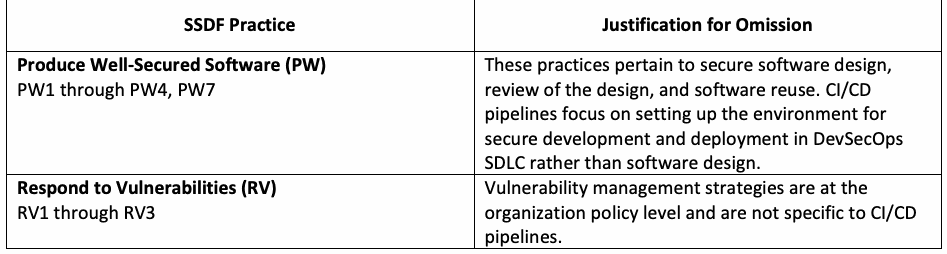
| SSDF実践 | 省略理由 |
| 十分に保護されたソフトウェアを作成する（PW）PW1～PW4、PW7 | これらの実践は、セキュアなソフトウェア設計、設計レビュー、ソフトウェア再利用に関するものです。CI/ |
| 脆弱性に対応する（RV）RV1～RV3 | 脆弱性管理戦略は組織の方針レベルで定めるものであり、CI/ |